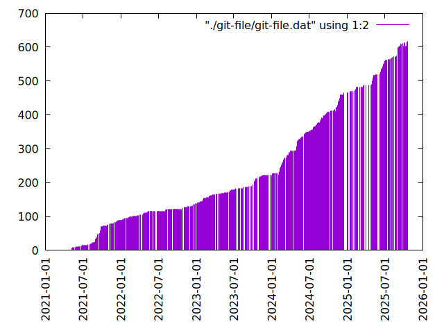
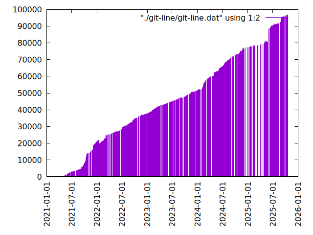

Insomnia
概要
このドキュメントはプログラム関連の文書シリーズである。この文書の目的は主に3つある。
プログラマとして直面した雑事を記録して未来の問題解決に利用すること
過去詰まったのと同じ問題にあたることはよくあるので、記録しておくとすぐ辿り着いて解決できる可能性が高まる。ググるだけだと、検索順位が変わったり検索ワードを忘れて、二度とたどりつけなくなることが多かった。また、よりよい方法を思いついたときにすでにベースがあると少しつづ改良する基盤にできる。
得たことを 大量に 収集する保存場所
人は大量に集まったものをすごい、熱意があると考える傾向がある。自身の行動も例外でなく、量を前にして自分はそれが好きなのだと錯覚していく。熱意は生まれ持ったものでなく、自分から迎えに行くものだと考えている。量はさらなるモチベーションを生み出し、より収集し、より好きになる循環が生まれる。そうして徐々に錯覚でなく本物になっていく。だから集める。大量に収集するにはそれなりに構造化し、整理した状態を保つ必要がある。
新しいアイデア・洞察を得る
ものごとを整理し、着想を得る基盤にする。新しいアイデアといっても、組み合わせにすぎない。しかし組み合わせるためには既存のものを整理し本質をよく理解しておくことが必要であり、そのための準備をする。
すべて自分のためである。しかし未来の自分は他人なので、文脈を共有しない他人が見て理解できるように書く。
作成者の情報。
| 氏名 | 貴島 大悟 Kijima Daigo |
| 生年月日 | 1998-03-28 |
| 居住地 | 東京 |
| 最終学歴 | 鹿児島大学 法文学部 |
| GitHub | kijimaD |
関連リンク。
KDOC
ナンバリングした、1エントリで完結する文章。
- ⏳ ドラフト: すべての文書はドラフト状態からスタートする。
- 📚 文献メモ: 情報源を読んだメモ。既存メモに関連、発展させられるアイデアを位置とともにメモする。あとで別のメモに清書する。
- 💿 永続メモ: 研究を深めるのに寄与する、信頼性のある情報に基づいたメモ。2つのケースで作成する。1. 文献メモから抜き出す。2. ほかの永続メモとリンクさせる。対立/修正/補足/組み合わせ/疑問。
- 🏗️ 構造化メモ: 集積したトピックのリンクをまとめたメモ。
- 📅 プロジェクトメモ: プロジェクトを記録したメモ。比較的長い期間取り組むもの、結論が出るとは限らないものを書く。
- 🧠 エッセイ: 考えたこと。主観に基いて記載したメモ。
- 🔧 Wiki: 調べればわかる、具体的な手順などを記したメモ。
📚 文献メモ
- KDOC 3: 『ない仕事の作り方』
- KDOC 36: 『TAKE NOTES!』
- KDOC 40: 『数学書の読みかた』
- KDOC 47: 『低レイヤを知りたい人のためのCコンパイラ作成入門』
- KDOC 50: 『Unity Performance Tuning Bible』
- KDOC 62: 『Billy Lynn’s Long Halftime Walk』
- KDOC 63: 『私はどのようにしてLinuxカーネルを学んだか』
- KDOC 65: 『Go Changes』
- KDOC 69: 『Go compiler intrinsics』
- KDOC 90: 『ゲームシナリオ入門』
- KDOC 91: 『世界一流エンジニアの思考法』
- KDOC 99: 『詳解UNIXプログラミング』
- KDOC 128: 『Goならわかるシステムプログラミング』
- KDOC 129: 『ポインタ理解のためのアセンブリ入門』
- KDOC 132: 『技術書の読書術』
- KDOC 136: 『はじめてのOSコードリーディング』
- KDOC 139: 『Googleのソフトウェアエンジニアリング』
- KDOC 140: 『自作エミュレータで学ぶx86アーキテクチャ』
- KDOC 164: 『Obsidianでつなげる情報管理術』
- KDOC 167: 『CPUの創り方』
- KDOC 169: 『ユーザーストーリーマッピング』
- KDOC 173: 『ガベージコレクションのアルゴリズムと実装』
- KDOC 174: 『位置情報エンジニア養成講座』
- KDOC 177: 『モブプログラミング・ベストプラクティス』
- KDOC 178: 『ディープラーニングAIはどのように学習し、推論しているのか』
- KDOC 179: 『ハロー“Hello, World” OSと標準ライブラリのシゴトとしくみ』
- KDOC 180: 『最短コースでわかる PyTorch ＆深層学習プログラミング』
- KDOC 181: 『Linuxシステムプログラミング』
- KDOC 184: 『イラストでわかるDockerとKubernetes』
- KDOC 188: 『Visual Guide to Slices in Go』
- KDOC 190: 『Rubyのしくみ Ruby Under a Microscope』
- KDOC 192: 『Write Great Code Vol.1』
- KDOC 194: 『32ビットコンピュータをやさしく語る はじめて読む486』
- KDOC 195: 『ディープラーニングがわかる数学入門』
- KDOC 197: 『プリズナー・トレーニング』
- KDOC 198: 『ゼロから作るDeep Learning』
- KDOC 202: 『30日でできる! OS自作入門』
- KDOC 207: 『Unix考古学』
- KDOC 210: 『0と1のコンピュータ世界 バイナリで遊ぼう!』
- KDOC 216: 『文字コードの仕組みと歴史入門: なぜ文字化けは起こるのか』
- KDOC 217: 『基礎からきっちり覚える 機械語入門』
- KDOC 218: 『図解入門 よくわかる 最新 鉄道の技術と仕組み』
- KDOC 223: 『いやげ物』
- KDOC 224: 『親孝行プレイ』
- KDOC 230: 『忘れ去られたCPU黒歴史』
- KDOC 231: 『揚げて炙ってわかるコンピュータのしくみ』
- KDOC 232: 『たのしいバイナリの歩き方』
- KDOC 235: 『郷土LOVE』
- KDOC 236: 『さよなら私』
- KDOC 237: 『マイ仏教』
- KDOC 244: 『エンジニアのためのカンファレンス参加の楽しみ方』
- KDOC 250: 『初心者でも完成させる 個人でのノベルゲーム制作の流れ』
- KDOC 251: 『終戦日記』
- KDOC 252: 『月刊ラムダノート 4-3-9-2024』
- KDOC 255: 『完全教祖マニュアル』
- KDOC 257: 『よいこの君主論』
- KDOC 258: 『ピアリング戦記』
- KDOC 264: 『YARV Maniacs』
- KDOC 274: 『RFCの読み方』
- KDOC 286: 『ブラウザの仕組み』
- KDOC 289: 『コンパイラとバーチャルマシン』
- KDOC 293: 『超例解Linuxカーネルプログラミング』
- KDOC 321: 『静寂の技法』
- KDOC 322: 『模倣と独立』
- KDOC 324: 『プロだけが知っている 小説の書き方』
- KDOC 336: 『How does a USB keyboard work?』
- KDOC 343: 『Tidy First?』
- KDOC 349: 『角栄に花束を』
- KDOC 350: 『正直不動産』
- KDOC 356: 脳を思い通りにさせる方法を見る
- KDOC 358: 楽しいからいつまでも没頭できる、は間違っている
- KDOC 359: 『超一流になるのは才能か努力か?』
- KDOC 370: 『人を選ぶ技術』
- KDOC 371: 初対面の緊張は正対しないことで緩和できる
- KDOC 372: 相手をリラックスさせるには自分自身がリラックスすればよい
- KDOC 373: アイスブレイクのコツは相手の氷ではなく自分自身の氷を溶かすことである
- KDOC 374: 会社の評価システムと権限委譲システムはカルチャーの絶対的な指標となる
- KDOC 375: 面接官たちは自分たちの見立てや決断において、リスクを取りたがらない
- KDOC 377: 『一日で読めてわかるTCP/IPのエッセンス』
- KDOC 378: 『RFC 1952: GZIP file format specification version 4.3』
- KDOC 380: 『すごい面接の技術 転職活動で「選ばれる人」になる唯一の方法』
- KDOC 384: 『syntactic support for error handling』
- KDOC 385: 『続ける思考』
- KDOC 386: IPはデータを機器に届けられるが、目的のプログラムを示せない
- KDOC 387: イーサネットによる通信はMACアドレスを使う
- KDOC 388: 『仕事ですぐに使えるTypeScript』
- KDOC 390: イーサネットや無線LANは1つのネットワーク内での通信を行える
- KDOC 395: IPの役割は複数ネットワークにおいてデータを送れるようにすること
- KDOC 399: 『PostgreSQL 17.0』
- KDOC 404: ネットワークは階層化によって自由度を高くしている
- KDOC 405: IPアドレスは論理アドレスで、MACアドレスは物理アドレスである
- KDOC 406: TCP/IPでは1つのIPアドレスでネットワークとノードをまとめて表す
- KDOC 425: 『具体と抽象』
- KDOC 469: 『初めての不動産投資必勝ルール』
- KDOC 470: 『人生は、運よりも実力よりも「勘違いさせる力」で決まっている』
- KDOC 471: 『マスタリングTCP/IP』
- KDOC 473: 『Excelでできる不動産投資「収益計算」のすべて』
- KDOC 474: 『Go言語による並行処理』
- KDOC 476: 『AWSネットワーク入門』
- KDOC 477: 『Docker-Kubernetesネットワークのしくみ』
- KDOC 479: 『ネットワークのしくみ』
- KDOC 484: 『プログラミングコンテスト攻略のためのアルゴリズムとデータ構造』
- KDOC 486: 『ソフトウェアアーキテクチャの基礎』
💿 永続メモ
- KDOC 261: スタックマシンとレジスタマシンにおけるスタックに違いはあるか?
- KDOC 262: レジスタマシンにおけるスタックの使いみちを考える
- KDOC 263: 保存先がレジスタかスタックかで計算モデルが違う
- KDOC 266: レジスタマシンとスタックマシンの使い分けは何か?
- KDOC 267: レジスタマシンとスタックマシンの命令セットの違いは何か?
- KDOC 268: ほかのスタックマシンで2重スタックマシンになっている例はあるか?
- KDOC 269: レジスタマシンとスタックマシンを比較する
- KDOC 270: 動的型付け言語ではなぜバイトコードにコンパイルすることが多いか?
- KDOC 271: 動的型付け言語が機械語に変換しにくい理由を考える
- KDOC 272: バイトコード変換は型情報が必須ではない
- KDOC 275: まず何を前提にしてマシンを構成しようとしているか
- KDOC 276: なぜパッケージマネージャに実行速度の違いがあるのか?
- KDOC 277: パッケージマネージャの依存関係解決には計算コストがかかる
- KDOC 278: パイプの詰まりを再現する
- KDOC 279: パイプのバッファはいっぱいになるとwriteをブロックする
- KDOC 281: パイプで結合されたプロセスは非同期実行されていることを確かめる
- KDOC 282: 単体だと終了しないプロセスでパイプを使うと終了するのはなぜか?
- KDOC 283: パイプはファイルディスクリプタがクローズされると終了する
- KDOC 284: パイプで結合したプロセスが終了する流れを見る
- KDOC 285: ほかにReact的なアイデアのプログラムはあるか?
- KDOC 287: バイトコードにメモリサイズが書かれていないことを確認する
- KDOC 290: なぜJITコンパイルが必要なのか?
- KDOC 291: JITコンパイルは必要な部分だけコンパイルして両取りする
- KDOC 296: appendにステップインできないのはなぜか?
- KDOC 297: builtin packageの定義はダミーである
- KDOC 298: builtinの関数ボディなしの宣言はどうやっているか?
- KDOC 299: appendはコンパイルすると消える
- KDOC 300: スライスのcapacityが伸長する様子をデバッガで見る
- KDOC 301: なぜReact Queryを挟むのか?
- KDOC 302: React QueryによってAPIリクエストをキャッシュする
- KDOC 303: React Queryによって状態管理する
- KDOC 304: 加算と乗算どちらが早いか?
- KDOC 305: 加算と左ビットシフトの実行速度を計測する
- KDOC 307: 乗算と左ビットシフトの実行速度を計測する
- KDOC 310: なぜCの文字列はnull終端なのか?
- KDOC 314: Cの配列はメモリ効率のため長さを保持していない
- KDOC 315: 文字列は長さを事前に決められないことが多い
- KDOC 316: Goのスライスは長さを保持している
- KDOC 317: Goの文字列は長さを保持している
- KDOC 318: カーネルモジュールをマウントして動作確認するとよい
- KDOC 334: トランザクションはネストできない
- KDOC 340: mozcとfcitxの違いは何か?
- KDOC 360: goとtoolchainの違いは何か?
- KDOC 362: コンパイル可能な最低バージョンと、ビルドに使うバージョンは異なる
- KDOC 363: リリース番号のrcはリリース候補を示す
- KDOC 366: Goのbytes, strings packageは類似している
- KDOC 367: 名前付きパイプの使い道は何か?
- KDOC 368: 名前付きパイプはファイル書き込みが発生しないため早い
- KDOC 376: 業務経験や企業ブランドの評価割合が高い理由を考える
- KDOC 381: 識別子の先頭に数値が使えないのは区別がつかなくなるから
- KDOC 382: JavaScriptにトランスパイルするのはなぜか?
- KDOC 383: JavaScriptはブラウザの組み込み言語でありランタイムの更新は難しい
- KDOC 389: GORM + MySQLでカラムの順番が変動するのはなぜか?
- KDOC 411: スタックは積み重ねて取り出して解放する。ではヒープは?
- KDOC 412: ヒープ管理方法の変遷を見る
- KDOC 415: io.Readerのシグネチャはヒープエスケープを避けられる設計になっている
- KDOC 416: Goのエスケープ解析における2つの不変条件を見る
- KDOC 417: WASMでリクエスト実装を変えているのを見る
- KDOC 419: constが埋め込まれる様子を見る
- KDOC 424: big.Ratのゼロ値はゼロ除算を避けるようになっている
- KDOC 426: string型の仕様を見る
- KDOC 429: 組み込みのprintとfmtのPrintの違いを見る
- KDOC 430: エイリアス型に対する型アサーションを見る
- KDOC 435: daysPerYearの値は何か?
- KDOC 436: mapをランダムに散らしている実装はどこにあるか?
- KDOC 437: 過去のmap delete記法を見る
- KDOC 438: Goのバケット構造体はフィールドがないが値を保持している
- KDOC 439: 過去elseブロックでの中括弧は必須ではなかった
- KDOC 440: 余りがマイナスになるか正の数になるかの方式の名前を見る
- KDOC 441: errorは組み込み型ではなかった時代がある
- KDOC 442: メモリエイリアシング検出と対策の例を見る
- KDOC 444: デコード時の未知のキー混入を防ぐ
- KDOC 446: telnetでTCPコネクションを試す
- KDOC 449: 32bitマシンでint64型を使うとどうなるのか?
- KDOC 450: Goで型のメモリ上のサイズの仕様がどうなっているか見る
- KDOC 451: int64を使いたいとき
- KDOC 452: 公開鍵と秘密鍵の使い分け
- KDOC 453: なぜホストを0.0.0.0にするとマシン外からのリクエストを受けられるのか?
- KDOC 454: シェルでバイナリが文字列表示されるのはなぜか?
- KDOC 455: 『基礎からわかるTCP/IPネットワークコンピューティング入門』
- KDOC 456: IPにパケットの到達性の保証がないのはなぜか?
- KDOC 461: VPCのIPアドレス範囲が/16から/28なのはなぜか?
- KDOC 462: RFC3339 形式に精度の制限はない
- KDOC 465: 署名と暗号化の処理の違いはなにか?
- KDOC 466: ディストロレスコンテナに何が入っているのか見る
- KDOC 467: Webアプリケーション全体について質問すること
- KDOC 478: 重なりマッチしない
- KDOC 481: Route53がパブリックIPのないELBを解決する様子を観察する
📅 プロジェクトメモ
- KDOC 5: fmtを読む
- KDOC 8: レビューツールを作成する
- KDOC 11: unitcheckerを読む
- KDOC 13: make2helpを読む
- KDOC 15: Emacs Caskを読む
- KDOC 24: ゲームボーイエミュレータを作る
- KDOC 25: docker progress を読む
- KDOC 27: Cコンパイラを書く
- KDOC 28: 交通シミュレーションゲームを作る
- KDOC 29: Simutransのコードを読む
- KDOC 55: giteaのコードを読んでメモする
- KDOC 56: flagrのコードを読んでメモする
- KDOC 57: sokoban-goを読む
- KDOC 59: ECSを使ってRPGを作る
- KDOC 66: 通知ビューワを作る
- KDOC 171: PDF本棚を作る
- KDOC 201: スクリーンルーラーを作る
- KDOC 212: バイナリ博物館を作る
- KDOC 221: 郷土資料を作る
- KDOC 238: 他人の博物館を観察して参考にする
- KDOC 323: ノベルゲームバンドルを作る
- KDOC 354: ワード移動を可視化するパッケージを作る
🧠 エッセイ
- KDOC 1: denoteを使う
- KDOC 2: 仕事場を見る
- KDOC 4: テッキーな人たちを観察する
- KDOC 6: 教育サービス会社を退職した
- KDOC 7: ドローン・地図関係の会社に入社した
- KDOC 9: 上には上のオタクがいる
- KDOC 10: より理解するための基準を考える
- KDOC 12: 出力することで理解を確かにする
- KDOC 14: 外に出てなかった自分へアドバイスする
- KDOC 16: 2022年をまとめる
- KDOC 17: 社外の人と開発するコツを考える
- KDOC 21: 仕事のように集中する
- KDOC 26: 深く知る
- KDOC 32: 『呪術廻戦』を見た
- KDOC 34: 上京してよかったこと
- KDOC 35: 赤羽を歩いた
- KDOC 37: トップダウンかボトムアップ、どちらで成し遂げるか?
- KDOC 38: ツェッテルカステンのやり方を考える
- KDOC 39: ツェッテルカステンとwikiの違いは、考えか事実か
- KDOC 41: 言語仕様書、RFC、数学の難しさは字面通りではないことにある
- KDOC 43: 行き詰まったとき別のことをやるのに罪悪感を感じなくていい
- KDOC 44: 多対多のことに対して落胆するのを克服する
- KDOC 48: 三角関数で単位円を使う理由を見る
- KDOC 51: 1次情報を読む人々を参考にする
- KDOC 58: 仕事でやるのが一番早い
- KDOC 60: ネット広告がクソな理由を考える
- KDOC 61: 競争と認識することでモチベーションを上げる
- KDOC 64: バトルディッガー編のゲームデザインを考える
- KDOC 67: 2023年をまとめる
- KDOC 68: 極めた人は単純にそれが好きだと言わないことが多い
- KDOC 70: 聖地巡礼したくなる要素は何か
- KDOC 71: KDOCエントリの書き方を考える
- KDOC 75: 動植物が一切出ない雪山サバイバル映画を見る
- KDOC 77: 検証する方法があると理解が進む
- KDOC 85: 元気に動くUnix on PDP-7を見て連綿と続く歴史を感じた
- KDOC 87: なぜRFCの内容を理解できないのか
- KDOC 92: 何も覚えてなくてショックを覚えた
- KDOC 100: 細かいことを気にせず進める
- KDOC 101: 先にインターフェースを文書化するとやりやすい
- KDOC 102: 応答不可な時間帯を作って集中する
- KDOC 103: ゆるいインターネット断ちのやり方を考える
- KDOC 104: やりたいことが多すぎる
- KDOC 105: 誰かにとってはローカルニュースである
- KDOC 110: やりたいことに共通することを考える
- KDOC 111: tarは Tape Archive の略である
- KDOC 112: 何を捨てるかが重要だと考えた
- KDOC 116: コードを過大評価していた
- KDOC 117: spacious-padding.elが最高だった
- KDOC 118: ハックできる認知範囲を増やす
- KDOC 119: ベル研究所のショッキングな壁の色に驚く
- KDOC 120: Git LFS反映には削除が必要なことを知る
- KDOC 122: Linuxカーネル知識の全体像を把握する
- KDOC 127: ChromeのPDFビューワでしおりを使う
- KDOC 130: アセンブラの手っ取り早い学び方を考える
- KDOC 134: スライド作りに適した道具を考える
- KDOC 135: スライドのショーケースを作る
- KDOC 148: ミンサガリマスターが最高のリマスターだった
- KDOC 149: 一歩引いて考えるための言葉がある
- KDOC 150: メモに関連を作れない理由を考える
- KDOC 153: すでにあるメモから、関連させられないか考える
- KDOC 154: よくないメモの例を挙げる
- KDOC 155: 文献メモには内容のメモしか書かないようにする
- KDOC 156: 深く理解できないのは疑問を持たないから
- KDOC 157: 今のメモで足りないことを考える
- KDOC 158: 記録として書くだけでは意味がない
- KDOC 161: KDOCの目的を考える
- KDOC 166: KDOCは何ではない
- KDOC 168: メモに書く必要のないことを考える
- KDOC 176: 芸術家が期限内に作品を完成させる方法から学ぶ
- KDOC 193: プログラミング言語は共通言語として役立つ
- KDOC 196: 気乗りしない仕事に意味を見出す
- KDOC 199: 文書づくりの仕事で事前に決めておくことを考える
- KDOC 203: 必要性のある状況が学ばせる
- KDOC 204: 知らない分野の学びかたを考える
- KDOC 209: 新しいものを生み出すためには詳しくなければならない
- KDOC 211: リアルな都市形成シミュレーションゲームに必要な要素を考える
- KDOC 215: 運動習慣を身につけるヒントを考える
- KDOC 219: 腕立て腹筋は難しいことを認識しなければならない
- KDOC 220: 興味を喚起する方法を考える
- KDOC 234: 印刷博物館を観察する
- KDOC 239: 警察博物館を観察する
- KDOC 240: 漱石山房記念館を観察する
- KDOC 242: 鳩山会館を観察する
- KDOC 247: 釣り文化資料館を観察する
- KDOC 248: 東京おもちゃ美術館を観察する
- KDOC 249: 消防博物館を観察する
- KDOC 256: 有害コンテンツをフィルタリングする指針を考える
- KDOC 265: 昭和記念館を観察する
- KDOC 273: 自分で作るときの参考にするつもりで見ると発見がある
- KDOC 288: DNSフィルタリングで有害コンテンツをブロックする
- KDOC 292: 古代オリエント博物館を観察する
- KDOC 306: カタカナで認識していると定着しない
- KDOC 308: 市ヶ谷の社 本と活字館を観察する
- KDOC 309: JICA地球ひろばを観察する
- KDOC 311: 関数呼び出しをわかりやすく表記する案を考える
- KDOC 319: 文字列は特別な扱いをされている
- KDOC 320: 切手の博物館を観察する
- KDOC 325: お金と切手の博物館を観察する
- KDOC 328: 技術的に難しいとは何か考える
- KDOC 330: 新宿歴史博物館を観察する
- KDOC 331: ソースコードは本とは違う
- KDOC 332: Contextのテストを読むと理解しやすい
- KDOC 333: 動画にシフトしている分野がある
- KDOC 337: 多読は難しいことを認識しなければならない
- KDOC 338: 英語学習に向いていて興味のあるコンテンツを考える
- KDOC 339: 親しみのレシピを使う
- KDOC 342: リリースを調べる効用を感じた
- KDOC 344: 失敗の対価を認識する
- KDOC 351: 対価に大きな影響があるのはどこで働いているか
- KDOC 352: 使う状況をイメージできるほど頭に入りやすい
- KDOC 353: メモを小さくして組み合わせやすくする
- KDOC 355: プログラミングを仕事の梃子として使うとよい
- KDOC 357: 方法のことばかり考えがちなのは足踏みである
- KDOC 361: 労働時間は単に商品の1つと考えたほうが建設的に見える
- KDOC 364: Goコマンドやmoduleについて知らないことが多い
- KDOC 379: 選択するとき考えていることを示す
- KDOC 396: 優れた技術ブログは思考プロセスを含む
- KDOC 397: 技術力とは、技術選択の理由を説明できることである
- KDOC 400: 役割や責任を明確にすることでチーム内のコミュニケーションが円滑になる
- KDOC 403: 六義園を観察する
- KDOC 407: 1W5Hでユーザーストーリーを書く
- KDOC 408: 続けるコツは週7日やることである
- KDOC 409: 挫折し続けた運動を習慣化できたのは毎日やったから
- KDOC 410: 物事に対する情熱は行動の後に生まれる
- KDOC 420: トキワ荘マンガミュージアムを観察する
- KDOC 423: 科学技術館を観察する
- KDOC 427: スマホにDNSフィルタリングを設定して有害コンテンツをブロックする
- KDOC 433: カメラ博物館を観察する
- KDOC 434: メモする基準を定める
- KDOC 443: 本を読んで解決すると思っていた
- KDOC 448: アメリカに行ったら映画をより楽しめるようになった
- KDOC 458: 紙の博物館を観察する
- KDOC 459: 渋沢史料館を観察する
- KDOC 468: 帰還者たちの記憶ミュージアムを観察する
- KDOC 472: 遊就館を観察する
- KDOC 480: Route53の由来はポート番号である
- KDOC 482: 日本オリンピックミュージアムを観察する
🔧 Wiki
- KDOC 42: EbitenUIで動的に画像を書き換える
- KDOC 45: プログラミング言語の内部的な違いをアセンブリから調べる
- KDOC 46: Goの宣言構文がCと異なる理由を見る
- KDOC 52: Goで構造体がインターフェースを実装しているか確認する
- KDOC 53: Goで独自定義のエラーをconstにする
- KDOC 54: Goのiotaの仕組みを見る
- KDOC 72: org-modeのHTMLエクスポート時に結果だけを表示する
- KDOC 73: odでファイルの中身をN進数で見る
- KDOC 74: The input device is not a TTYを理解する
- KDOC 76: コンテナでLocaleを設定する
- KDOC 78: org-modeで脚注を再割り振りする
- KDOC 79: Localeの標準的な紙のサイズとは
- KDOC 80: 「あ」がどうして343 201 202になるのか
- KDOC 81: iframeの制約を考える
- KDOC 82: errors.Unwrapを読む
- KDOC 83: CORSを確認する
- KDOC 84: いろんなサイトでOPTIONSメソッドを送ったときのレスポンスヘッダーを見る
- KDOC 86: errors.Is()の比較ロジックを見る
- KDOC 88: ファイルの詳細を調べるstatコマンドを見る
- KDOC 89: コアダンプの語源を知る
- KDOC 93: Access-Control-Allow-Headersを調べた
- KDOC 94: 2>&1の意味を見る
- KDOC 95: なぜjson.Unmarshalの引数はバイト列なのか
- KDOC 96: errors.As()の使い方
- KDOC 97: Partial Contentの使いどころ
- KDOC 98: org-roam-node-findでエントリが出なくなったときの直し方
- KDOC 106: Linuxでアーキテクチャ名を調べる
- KDOC 107: システムコールを調べる
- KDOC 108: manのセクション番号を調べる
- KDOC 109: 発行システムコールを調べる
- KDOC 114: IndexedDBの使い道を見る
- KDOC 115: 負の値が関わる剰余挙動の違い
- KDOC 121: Goでローカルパッケージをインストールする
- KDOC 123: HandleFuncとは何か
- KDOC 124: go-dlv.elを使う
- KDOC 125: /procのマニュアルを調べる
- KDOC 126: xxdでファイルをバイナリで見る
- KDOC 131: 今さらOpenAPI v3.1の変更点を知る
- KDOC 137: 簡単にプロセスの使用メモリを確認する
- KDOC 138: Goプロファイラの使い方を見る
- KDOC 141: Cのポインタ操作をアセンブリで見る
- KDOC 142: データセグメントの使い分けを試す
- KDOC 143: Cの添字記法は単なるシンタックスシュガーである
- KDOC 144: データ型によるサイズの違いを確かめる
- KDOC 145: Goアセンブリの違いを見る
- KDOC 146: org-roam-uiをデプロイした
- KDOC 147: GITHUB_TOKENを使ってgit pushするとトリガーされない
- KDOC 151: Goコンパイラの定数式の埋め込みをみる
- KDOC 152: Dependabotが作ったPRでワークフローが失敗する理由を見る
- KDOC 159: テクスチャとスプライトの違いを見る
- KDOC 160: 見下ろし型2Dゲームにおけるレイキャティングの例を見る
- KDOC 162: セグメンテーションとページングの違いを見る
- KDOC 163: セグメンテーションとページングのユースケースを考える
- KDOC 170: PDFしおりを使いやすくする
- KDOC 172: 関数呼び出しで起きていることを見る
- KDOC 175: ANSIエスケープシーケンスのスタイリングを理解する
- KDOC 182: ブロックサイズの違いによるパフォーマンスへの影響を調べる
- KDOC 183: イメージビルド時にツール側のキャッシュを使う
- KDOC 185: コンテナの中身をホストマシンにダンプして理解する
- KDOC 186: コンテナ実行環境の設定ファイルを見る
- KDOC 187: psでプロセスツリーを見て理解する
- KDOC 189: Goでスライスがどのように保存されているか調べる
- KDOC 191: 仕様を検証するツールも提供するとよい
- KDOC 200: X windowのログを見る
- KDOC 205: エラーと例外の違いを見る
- KDOC 206: バイト数を直感的に把握する
- KDOC 208: 宣言と定義の違いを見る
- KDOC 213: PNG画像のバイナリを眺める
- KDOC 214: テンソルを確認する
- KDOC 222: curlでTLSのバージョン制限を確認する
- KDOC 225: mallocをアセンブラで見る
- KDOC 226: 任意のアドレスに読み書きする
- KDOC 227: フィールド定義の順番によってメモリサイズが変わることがある
- KDOC 228: 変数を書いた順番とアドレスの関係はコンパイラによって異なる
- KDOC 229: 浮動小数点を手計算する
- KDOC 233: Ubuntuでシステムコール番号を調べる
- KDOC 241: jpg画像のバイナリを眺める
- KDOC 243: シフト演算命令に変換されるのを確かめる
- KDOC 245: パックしたデータ型がどのように保存されているか見る
- KDOC 246: 浮動小数点の誤差を体感する
- KDOC 253: GoでN段階に可変長引数を渡す
- KDOC 254: ジョブプロセスがSleepしていた理由を考える
- KDOC 260: プロセスがSleepになるのを再現する
- KDOC 280: パイプで結合されたプロセスは非同期実行されている
- KDOC 294: errorsは標準ライブラリと外部ライブラリで異なる
- KDOC 295: LANでDNSフィルタリングする流れを見る
- KDOC 312: 汎整数拡張を確かめる
- KDOC 313: CPUのビット数はレジスタのサイズである
- KDOC 326: スライス式の後ろは含まない
- KDOC 327: 変数交換のイディオムを見る
- KDOC 329: Replacerで便利に置換する
- KDOC 335: 消しても新しいバージョンがダウンロードされていた
- KDOC 341: Quick overview of Go1.24
- KDOC 345: 中間要素の作成に便利なstrings.Joinを見る
- KDOC 346: appendで先頭に追加する
- KDOC 347: 大文字小文字の変換をそらで書く
- KDOC 348: インデックスとスライス式は違う
- KDOC 365: toolchainを実際に試す
- KDOC 369: 名前付きパイプは読み書き両方をオープンしてないとブロックする
- KDOC 391: 1対1のテーブルを維持する
- KDOC 392: 絞ってから関連レコードを取得してパフォーマンスを改善する
- KDOC 393: ビックバンデプロイのやり方を考える
- KDOC 394: manのシステムコールセクションはインストールされてないことがある
- KDOC 398: GORMフックはレシーバーがnilになる可能性がある
- KDOC 401: 起動中のプロセスをstraceで観察する
- KDOC 402: Goの識別子の境界を探る
- KDOC 413: ローカル変数がヒープにエスケープされるのを見る
- KDOC 414: インターフェースがヒープにエスケープされるのを見る
- KDOC 418: 実行時のオーバーヘッドなしで型のサイズを判定する
- KDOC 421: testdataディレクトリはコンパイル対象外になる
- KDOC 422: 継続時間形式を見る
- KDOC 428: 桁ごとに処理するスマートな方法を見る
- KDOC 431: require.NoErrorを使ってエラー時に中断する
- KDOC 432: 型アサーションは何を見て判断しているのか?
- KDOC 445: ログ権限がECSの実行ロールで必要な理由を考える
- KDOC 447: Connectionヘッダーは現在の接続にのみ適応する
- KDOC 457: メールから検証用の公開鍵を取得する
- KDOC 460: 最大公約数をスマートに求める
- KDOC 463: Base64エンコードでaがYQ==になるのはなぜか?
- KDOC 464: RSA署名を公開鍵で検証する流れを見る
- KDOC 475: 各桁の合計をスマートに得る
- KDOC 483: 『ROCK IN!』のコンセプトについて話す(訳)
- KDOC 485: asepriteでパッキングする
構成
このドキュメントはツェッテルカステン ライク な方法で構成する。あとで組み合わせてアイデアを得られるように、取り出しやすい形で整理しておく。

Figure 1: 構成

Figure 2: 作成フロー
参考。
Slides
(require 'cl) (setq urls (mapcar #'file-name-nondirectory (directory-files "./pdfs" t "\\.pdf$")) ) (loop for x in urls do (princ (format "<li><a href='./pdfs/index.html?file=%s'>%s</a></li>\n" x x)))
Repository stat
この文書はkijimaD/roamでバージョン管理されている。リポジトリの統計を図示した。
↓期間ごとで、リポジトリのファイル数を示す2。

Figure 3: Number of files(.org only)
↓期間ごとで、リポジトリの行数を示す。

Figure 4: Number of lines(.org only)
↓org-roam-uiで表示したリッチな関係図。フル画面で見る。
↓実際の数字を数える。この数字を目的にすることはなく、単に客観的に把握するためのメトリクスとして使う(キャンベルの法則を意識して)。
file_changed_count_day() { datestr_past=$1 datestr_future=$2 count=`git whatchanged --diff-filter=A --since="$datestr_past" --until="$datestr_future"--format=oneline --name-only --pretty=format: | grep -e ".*org" | sort -u | wc -l` printf "%s %s " `date --date "$datestr_past" "+%Y-%m-%d"` $count for (( i = 0; i < $count; i++ )); do printf "%s" "+" done echo } echo ビルド時刻 `TZ=JST-9 date "+%FT%T"` echo .orgファイル数 `find . -maxdepth 1 -type f -name "*.org" | grep -c "\.org$"` echo .orgファイルサイズ `du -h -c ./*.org | tail -n 1 | sed 's/\ttotal//'` echo 画像ファイル数 `find ./images -type f -name "*.png" -o -name "*.svg" | wc -l` echo 画像ファイルサイズ `du -h -c ./images/* | tail -n 1 | sed 's/\ttotal//'` total_multi_count=0 total_line_count=0 for file in ./*.org ; do if [ -f "$file" ]; then multi_count=$(wc -m < "$file") # マルチバイト line_count=$(wc -l < "$file") fi total_multi_count=$((total_multi_count + multi_count)) total_line_count=$((total_line_count + line_count)) done echo echo 文字数 ${total_multi_count}文字 echo 1ページ600文字とすると $((total_multi_count / 600))ページ echo 本1冊300ページとすると $((total_multi_count / 600 / 300))冊 echo 本1冊10万文字とすると $((total_multi_count / 100000))冊 echo 本1冊2cmとすると $((total_multi_count / 100000 * 2))cm echo echo 行数 ${total_line_count}行 echo 60行入るﾃﾞｨｽﾌﾟﾚｲだと $((total_line_count / 60))枚分 echo 14インチﾃﾞｨｽﾌﾟﾚｲだと $((total_line_count / 60 * 17 / 100))メートル echo echo "句点の数" `grep -rohE '。' ./*.org | wc -l` echo "読点の数" `grep -rohE '、' ./*.org | wc -l` echo "改行の数" `grep -rohE '\n' ./*.org | wc -l` echo echo "外部リンクの数" `grep -rohE 'https?://' ./*.org | wc -l` echo "内部リンクの数" `grep -rohE '\[\[id:.+?\]' ./*.org | wc -l` echo "見出し1の数" `grep -rohE '^\*\s+[^\s]' ./*.org | wc -l` echo "見出し2の数" `grep -rohE '^\*\*\s+[^\s]' ./*.org | wc -l` echo "見出し3の数" `grep -rohE '^\*\*\*\s+[^\s]' ./*.org | wc -l` echo "リストの数" `grep -rohE '^-\s+[^\s]' ./*.org | wc -l` echo "脚注の数" `grep -rohE '\[fn:.+?\]' ./*.org | wc -l` echo "挿入画像の数" `grep -rohE '^\[\[file:.+?\]\]' ./*.org | wc -l` echo echo "TODOの数" `grep -rohE '^\*.+?\sTODO' ./*.org | wc -l` echo "DONEの数" `grep -rohE '^\*.+?\sDONE' ./*.org | wc -l` echo "WAITの数" `grep -rohE '^\*.+?\sWAIT' ./*.org | wc -l` echo "WIPの数" `grep -rohE '\*.+?\sWIP' ./*.org | wc -l` echo "ステータスの数" `grep -rohE '^\*.+?\s(TODO|DONE|WAIT|WIP)' ./*.org | wc -l` echo echo "KDOCの数" `ls | grep "\-kdoc\-" | wc -l` echo "ドラフトの数" `ls | grep -E "\-kdoc\-.+?_draft" | wc -l` echo "プロジェクトメモの数" `ls | grep -E "\-kdoc\-.+?_project" | wc -l` echo "wikiの数" `ls | grep -E "\-kdoc\-.+?_wiki" | wc -l` echo "エッセイの数" `ls | grep -E "\-kdoc\-.+?_essay" | wc -l` echo "永続メモの数" `ls | grep -E "\-kdoc\-.+?_permanent" | wc -l` echo "構造化メモの数" `ls | grep -E "\-kdoc\-.+?_structure" | wc -l` echo "文献メモの数" `ls | grep -E "\-kdoc\-.+?_book" | wc -l` echo echo "コミット数" `git rev-list --count HEAD` echo "最初のｺﾐｯﾄ" `git log --date=iso --date=format:"%Y-%m-%dT%H:%M:%S" --pretty=format:"%ad" --reverse | head -n 1` echo "最新のｺﾐｯﾄ" `git log --date=iso --date=format:"%Y-%m-%dT%H:%M:%S" --pretty=format:"%ad" | head -n 1` echo echo "追加ファイル" echo "2年間" `git whatchanged --diff-filter=A --since="2 year ago" --format=oneline --name-only --pretty=format: | grep -e ".*org" | sort -u | wc -l` echo "1年間" `git whatchanged --diff-filter=A --since="1 year ago" --format=oneline --name-only --pretty=format: | grep -e ".*org" | sort -u | wc -l` echo "1ヶ月間" `git whatchanged --diff-filter=A --since="1 month ago" --format=oneline --name-only --pretty=format: | grep -e ".*org" | sort -u | wc -l` echo "1週間" `git whatchanged --diff-filter=A --since="1 week ago" --format=oneline --name-only --pretty=format: | grep -e ".*org" | sort -u | wc -l` file_changed_count_day "1 day ago" "0 day ago" file_changed_count_day "2 days ago" "1 day ago" file_changed_count_day "3 days ago" "2 days ago" file_changed_count_day "4 days ago" "3 days ago" file_changed_count_day "5 days ago" "4 days ago" file_changed_count_day "6 days ago" "5 days ago" file_changed_count_day "7 days ago" "6 days ago" echo echo "MDNの引用数" `grep -rohE 'https://(www\.)?developer\.mozilla\.org' ./*.org | wc -l` echo "RFCの引用数" `grep -rohE 'https://(www\.)?rfc-editor\.org' ./*.org | wc -l` echo "Amazon(日本)の引用数" `grep -rohE 'https://(www\.)?amazon\.co\.jp' ./*.org | wc -l` echo "YouTubeの引用数" `grep -rohE 'https://(www\.)?youtube\.com' ./*.org | wc -l` echo "Wikipediaの引用数" `grep -rohE 'https://(www\.)?(.+)?wikipedia\.org' ./*.org | wc -l`
ビルド時刻 2025-11-20T22:32:12 .orgファイル数 622 .orgファイルサイズ 5.7M 画像ファイル数 51 画像ファイルサイズ 5.5M 文字数 3086855文字 1ページ600文字とすると 5144ページ 本1冊300ページとすると 17冊 本1冊10万文字とすると 30冊 本1冊2cmとすると 60cm 行数 91531行 60行入るﾃﾞｨｽﾌﾟﾚｲだと 1525枚分 14インチﾃﾞｨｽﾌﾟﾚｲだと 259メートル 句点の数 17016 読点の数 12157 改行の数 57051 外部リンクの数 2854 内部リンクの数 989 見出し1の数 2445 見出し2の数 3594 見出し3の数 212 リストの数 8885 脚注の数 126 挿入画像の数 105 TODOの数 560 DONEの数 909 WAITの数 0 WIPの数 3 ステータスの数 1472 KDOCの数 474 ドラフトの数 9 プロジェクトメモの数 22 wikiの数 123 エッセイの数 137 永続メモの数 88 構造化メモの数 1 文献メモの数 103 コミット数 1821 最初のｺﾐｯﾄ 2021-05-09T00:22:00 最新のｺﾐｯﾄ 2025-11-20T22:27:52 追加ファイル 2年間 0 1年間 0 1ヶ月間 0 1週間 0 2025-11-19 0 2025-11-18 0 2025-11-17 0 2025-11-16 0 2025-11-15 0 2025-11-14 0 2025-11-13 0 MDNの引用数 18 RFCの引用数 11 Amazon(日本)の引用数 66 YouTubeの引用数 165 Wikipediaの引用数 276
(format "Built with: %s" (emacs-version))
Built with: GNU Emacs 30.1 (build 1, x86_64-pc-linux-gnu, GTK+ Version 3.24.50, cairo version 1.18.4) of 2025-08-28, modified by Debian
(format "Built with: Org version %s" (org-version))
Built with: Org version 9.7.11
Recent activity
Pomodoro
ポモドーロの統計。費やした時間を認識し、見合った効果が出ているかを考える。ある時期から業務でもカウントするようになっている。
This Week by Day
今週の記録。
Daily report:
| File | Timestamp | Tags | Headline | Time | |
|---|---|---|---|---|---|
| ALL | Total time | 3:00 | |||
| 20210615222732-project.org | File time | 2:05 | |||
| Tasks | 2:05 | ||||
| org-agendaツールを作る | 2:05 | ||||
| 20210904124352-workflow.org | File time | 0:55 | |||
| Habit | RepeatTasks | 0:55 | |||
| Habit | 部屋を掃除する 1 | 0:05 | |||
| Habit | 筋トレする | 0:05 | |||
| Habit, Train | 技術本を読む 3 | 0:05 | |||
| Habit | Kubenetes関連本を読む 1 | 0:05 | |||
| Habit | 不動産の本を読む 1 | 0:05 | |||
| Habit | 時事を読む 1 | 0:05 | |||
| Habit | 英語を読む 12 | 0:05 | |||
| Habit, Train | コード問題を解く 1 | 0:05 | |||
| Habit | メモを書く 3 | 0:05 | |||
| Habit | 長期プロジェクトをやる 1 | 0:05 | |||
| Habit | 英語で日記を書く 1 | 0:05 |
Daily report:
| File | Timestamp | Tags | Headline | Time | |
|---|---|---|---|---|---|
| ALL | Total time | 1:43 | |||
| 20210615222732-project.org | File time | 0:48 | |||
| Tasks | 0:48 | ||||
| org-agendaツールを作る | 0:48 | ||||
| 20210904124352-workflow.org | File time | 0:55 | |||
| Habit | RepeatTasks | 0:55 | |||
| Habit | 部屋を掃除する 1 | 0:05 | |||
| Habit | 筋トレする | 0:05 | |||
| Habit, Train | 技術本を読む 3 | 0:05 | |||
| Habit | Kubenetes関連本を読む 1 | 0:05 | |||
| Habit | 不動産の本を読む 1 | 0:05 | |||
| Habit | 時事を読む 1 | 0:05 | |||
| Habit | 英語を読む 12 | 0:05 | |||
| Habit, Train | コード問題を解く 1 | 0:05 | |||
| Habit | メモを書く 3 | 0:05 | |||
| Habit | 長期プロジェクトをやる 1 | 0:05 | |||
| Habit | 英語で日記を書く 1 | 0:05 |
Daily report:
| File | Timestamp | Tags | Headline | Time | |
|---|---|---|---|---|---|
| ALL | Total time | 2:38 | |||
| 20210615222732-project.org | File time | 0:27 | |||
| Tasks | 0:27 | ||||
| org-agendaツールを作る | 0:27 | ||||
| 20210904124352-workflow.org | File time | 2:11 | |||
| Habit | RepeatTasks | 2:11 | |||
| Habit | 部屋を掃除する 1 | 0:05 | |||
| Habit | 筋トレする | 0:06 | |||
| Habit, Train | 技術本を読む 3 | 0:30 | |||
| Habit | Kubenetes関連本を読む 1 | 0:05 | |||
| Habit | 不動産の本を読む 1 | 0:05 | |||
| Habit | 時事を読む 1 | 0:05 | |||
| Habit | 英語を読む 12 | 0:30 | |||
| Habit, Train | コード問題を解く 1 | 0:05 | |||
| Habit | メモを書く 3 | 0:30 | |||
| Habit | 長期プロジェクトをやる 1 | 0:05 | |||
| Habit | 英語で日記を書く 1 | 0:05 |
Daily report:
| File | Timestamp | Tags | Headline | Time | |
|---|---|---|---|---|---|
| ALL | Total time | 0:55 | |||
| 20210904124352-workflow.org | File time | 0:55 | |||
| Habit | RepeatTasks | 0:55 | |||
| Habit | 部屋を掃除する 1 | 0:05 | |||
| Habit | 筋トレする | 0:05 | |||
| Habit, Train | 技術本を読む 3 | 0:05 | |||
| Habit | Kubenetes関連本を読む 1 | 0:05 | |||
| Habit | 不動産の本を読む 1 | 0:05 | |||
| Habit | 時事を読む 1 | 0:05 | |||
| Habit | 英語を読む 12 | 0:05 | |||
| Habit, Train | コード問題を解く 1 | 0:05 | |||
| Habit | メモを書く 3 | 0:05 | |||
| Habit | 長期プロジェクトをやる 1 | 0:05 | |||
| Habit | 英語で日記を書く 1 | 0:05 |
This Month
今月の記録。
Monthly report starting on:
| File | Timestamp | Tags | Headline | Time | |
|---|---|---|---|---|---|
| ALL | Total time | 3d 9:47 | |||
| 20210615222732-project.org | File time | 1d 1:51 | |||
| Tasks | 20:50 | ||||
| org-agendaツールを作る | 20:50 | ||||
| Archives | 5:01 | ||||
| レンタルサーバから移行する | 3:20 | ||||
| 自宅サーバ設定する | 1:41 | ||||
| 20210904124352-workflow.org | File time | 1d 3:25 | |||
| Habit | RepeatTasks | 1d 2:45 | |||
| Habit | 部屋を掃除する 1 | 1:40 | |||
| Habit | 筋トレする | 1:41 | |||
| Habit, Train | 技術本を読む 3 | 3:45 | |||
| Habit | Kubenetes関連本を読む 1 | 1:50 | |||
| Habit | 不動産の本を読む 1 | 1:40 | |||
| Habit | 時事を読む 1 | 1:41 | |||
| Habit | 英語を読む 12 | 5:15 | |||
| Habit, Train | コード問題を解く 1 | 1:40 | |||
| Habit | メモを書く 3 | 3:22 | |||
| Habit | 長期プロジェクトをやる 1 | 2:31 | |||
| Habit | 英語で日記を書く 1 | 1:40 | |||
| Habit | Archives | 0:40 | |||
| Habit | リポジトリを読む 1 | 0:40 | |||
| 20231128T074518–kdoc-59-ecsを使ってrpgを作る__project.org | File time | 17:41 | |||
| project | Tasks | 1:16 | |||
| project | 階数表示のUIをいい感じにする | 1:16 | |||
| project | Archives | 16:25 | |||
| project | 街NPCに機能をもたせる | 0:50 | |||
| project | データ定義が重複しているのを直す | 0:50 | |||
| project | アイテム配置テーブルを実装する | 4:10 | |||
| project | 敵生成テーブルを実装する | 0:50 | |||
| project | 食料アイテムを追加する | 0:35 | |||
| project | パッキング方式を整理する | 1:15 | |||
| project | 物によってアイテムスプライトを変える | 0:25 | |||
| project | HUDで日本語を使えるようにする | 0:25 | |||
| project | UIを整理する | 6:15 | |||
| project | インタラクティブ可能なオブジェクトはアニメーションさせる | 0:50 | |||
| 20251016T010331–kdoc-474-『go言語による並行処理』__draft_book.org | File time | 9:10 | |||
| draft, book | この文書のステータス | 9:10 | |||
| 20251023T173743–kdoc-477-『docker-kubernetesネットワークのしくみ』__draft_book.org | File time | 1:40 | |||
| draft, book | この文書のステータス | 1:40 |
Node Analysis
| Page Rank | Title | Char Count | Commit | Percent | Last Changed |
| 61 | Emacs | 65377 | 143 | 1.43 | 4 months ago |
| 43 | Go | 207120 | 146 | 4.53 | 8 months ago |
| 35 | Rails | 56731 | 71 | 1.24 | 2 months ago |
| 33 | Programming Language | 29751 | 50 | 0.65 | 2 months ago |
| 29 | Docker | 58607 | 89 | 1.28 | 2 months ago |
| 25 | GitHub Actions | 11023 | 17 | 0.24 | 2 months ago |
| 25 | Ruby | 60044 | 88 | 1.31 | 2 months ago |
| 23 | Linux | 45312 | 83 | 0.99 | 9 months ago |
| 21 | C言語 | 19164 | 28 | 0.42 | 2 months ago |
| 19 | JavaScript | 26069 | 30 | 0.57 | 2 months ago |
| 19 | KDOC 36: 『TAKE NOTES!』 | 8869 | 4 | 0.19 | 2 months ago |
| 19 | GitHub | 5981 | 17 | 0.13 | 2 months ago |
| 18 | Git | 6310 | 26 | 0.14 | 2 months ago |
| 14 | Java | 1355 | 8 | 0.03 | 2 months ago |
| 13 | org-mode | 13967 | 46 | 0.31 | 2 months ago |
| 11 | SQL | 6103 | 22 | 0.13 | 2 months ago |
| 10 | TypeScript | 12199 | 25 | 0.27 | 2 months ago |
| 10 | OSS | 10163 | 19 | 0.22 | 2 months ago |
| 10 | Python | 4161 | 14 | 0.09 | 2 months ago |
| 9 | KDOC 140: 『自作エミュレータで学ぶx86アーキテクチャ』 | 7418 | 3 | 0.16 | 11 months ago |
| 8 | Rust | 57430 | 48 | 1.26 | 2 months ago |
| 8 | OpenAPI | 6820 | 15 | 0.15 | 2 months ago |
| 8 | CI | 1042 | 6 | 0.02 | 2 months ago |
| 8 | System Crafters | 2371 | 14 | 0.05 | 2 months ago |
| 8 | KDOC 59: ECSを使ってRPGを作る | 214575 | 16 | 4.7 | today |
| 7 | LISP | 2481 | 28 | 0.05 | 2 months ago |
| 7 | Emacs Lisp | 55166 | 37 | 1.21 | 2 months ago |
| 7 | KDOC 77: 検証する方法があると理解が進む | 1960 | 5 | 0.04 | 2 months ago |
| 7 | KDOC 377: 『一日で読めてわかるTCP/IPのエッセンス』 | 8257 | 1 | 0.18 | 4 months ago |
| 7 | Redis | 1364 | 4 | 0.03 | 2 months ago |
| 7 | KDOC 3: 『ない仕事の作り方』 | 11334 | 6 | 0.25 | 6 months ago |
| 7 | MySQL | 696 | 5 | 0.02 | 2 months ago |
| 7 | Nginx | 3140 | 9 | 0.07 | 2 months ago |
| 7 | LSP | 1168 | 5 | 0.03 | 2 months ago |
| 6 | みうらじゅん | 546 | 3 | 0.01 | 2 months ago |
| 6 | KDOC 83: CORSを確認する | 2086 | 2 | 0.05 | 4 months ago |
| 6 | Simutrans | 11305 | 17 | 0.25 | 2 months ago |
| 6 | React | 10879 | 19 | 0.24 | 2 months ago |
| 6 | RFC | 2171 | 9 | 0.05 | 2 months ago |
| 6 | KDOC 38: ツェッテルカステンのやり方を考える | 1393 | 1 | 0.03 | 4 months ago |
| 6 | KDOC 190: 『Rubyのしくみ Ruby Under a Microscope』 | 64410 | 4 | 1.41 | 1 year ago |
| 6 | KDOC 370: 『人を選ぶ技術』 | 4895 | 1 | 0.11 | 6 months ago |
| 6 | TextLint | 11241 | 22 | 0.25 | 2 months ago |
| 6 | Org-roam | 17960 | 46 | 0.39 | 1 year ago |
| 5 | game | 9206 | 25 | 0.2 | 2 months ago |
| 5 | Shell | 17718 | 48 | 0.39 | 5 months ago |
| 5 | Unicode | 704 | 4 | 0.02 | 2 months ago |
| 5 | GNU Guix | 17090 | 52 | 0.37 | 2 months ago |
| 5 | KDOC 210: 『0と1のコンピュータ世界 バイナリで遊ぼう!』 | 11841 | 3 | 0.26 | 2 months ago |
| 5 | Windows | 737 | 3 | 0.02 | 2 months ago |
| 5 | KDOC 91: 『世界一流エンジニアの思考法』 | 18535 | 4 | 0.41 | 2 months ago |
| 5 | KDOC 197: 『プリズナー・トレーニング』 | 10765 | 10 | 0.24 | 9 months ago |
| 5 | KDOC 310: なぜCの文字列はnull終端なのか? | 1291 | 1 | 0.03 | 11 months ago |
| 5 | KDOC 10: より理解するための基準を考える | 961 | 1 | 0.02 | 4 months ago |
| 5 | RSpec | 4322 | 13 | 0.09 | 2 months ago |
| 5 | KDOC 360: goとtoolchainの違いは何か? | 532 | 1 | 0.01 | 6 months ago |
| 4 | KDOC 129: 『ポインタ理解のためのアセンブリ入門』 | 7699 | 4 | 0.17 | 2 months ago |
| 4 | KDOC 411: スタックは積み重ねて取り出して解放する。ではヒープは? | 2309 | 1 | 0.05 | 4 months ago |
| 4 | Scala | 38893 | 14 | 0.85 | 2 months ago |
| 4 | KDOC 293: 『超例解Linuxカーネルプログラミング』 | 10707 | 1 | 0.23 | 11 months ago |
| 4 | magit | 3396 | 18 | 0.07 | 2 months ago |
| 4 | KDOC 45: プログラミング言語の内部的な違いをアセンブリから調べる | 1756 | 2 | 0.04 | 4 months ago |
| 4 | AWS | 2534 | 9 | 0.06 | 2 months ago |
| 4 | KDOC 71: KDOCエントリの書き方を考える | 9345 | 1 | 0.2 | 4 months ago |
| 4 | KDOC 385: 『続ける思考』 | 5390 | 1 | 0.12 | 4 months ago |
| 4 | curl | 2408 | 3 | 0.05 | 2 months ago |
| 4 | Kubernetes | 8478 | 20 | 0.19 | 2 months ago |
| 4 | KDOC 269: レジスタマシンとスタックマシンを比較する | 718 | 1 | 0.02 | 1 year ago |
| 4 | HTML | 930 | 8 | 0.02 | 2 months ago |
| 4 | Scheme | 1007 | 11 | 0.02 | 2 months ago |
| 4 | Wikipedia | 30625 | 53 | 0.67 | 2 months ago |
| 4 | CD | 329 | 4 | 0.01 | 2 months ago |
| 4 | EXWM | 5831 | 14 | 0.13 | 2 months ago |
| 4 | KDOC 85: 元気に動くUnix on PDP-7を見て連綿と続く歴史を感じた | 2724 | 5 | 0.06 | 2 months ago |
| 4 | CPU | 301 | 3 | 0.01 | 2 months ago |
| 3 | GNU | 1207 | 5 | 0.03 | 2 months ago |
| 3 | KDOC 254: ジョブプロセスがSleepしていた理由を考える | 3480 | 1 | 0.08 | 4 months ago |
| 3 | C# | 364 | 3 | 0.01 | 2 months ago |
| 3 | parser generator | 666 | 3 | 0.01 | 2 months ago |
| 3 | Yacc | 382 | 3 | 0.01 | 2 months ago |
| 3 | KDOC 63: 『私はどのようにしてLinuxカーネルを学んだか』 | 12001 | 4 | 0.26 | 2 months ago |
| 3 | projectile | 6561 | 10 | 0.14 | 2 months ago |
| 3 | KDOC 34: 上京してよかったこと | 1055 | 4 | 0.02 | 2 months ago |
| 3 | Linter | 11366 | 10 | 0.25 | 2 months ago |
| 3 | KDOC 184: 『イラストでわかるDockerとKubernetes』 | 3418 | 3 | 0.07 | 2 months ago |
| 3 | KDOC 148: ミンサガリマスターが最高のリマスターだった | 1698 | 3 | 0.04 | 2 months ago |
| 3 | KDOC 301: なぜReact Queryを挟むのか? | 704 | 1 | 0.02 | 11 months ago |
| 3 | KDOC 202: 『30日でできる! OS自作入門』 | 26538 | 3 | 0.58 | 2 months ago |
| 3 | PostgreSQL | 1338 | 6 | 0.03 | 2 months ago |
| 3 | KDOC 122: Linuxカーネル知識の全体像を把握する | 1091 | 4 | 0.02 | 2 months ago |
| 3 | KDOC 141: Cのポインタ操作をアセンブリで見る | 3625 | 2 | 0.08 | 1 year ago |
| 3 | ローグライク作り | 122666 | 84 | 2.69 | 1 year ago |
| 3 | X Window System | 412 | 4 | 0.01 | 2 months ago |
| 3 | KDOC 288: DNSフィルタリングで有害コンテンツをブロックする | 2253 | 2 | 0.05 | 4 months ago |
| 3 | KDOC 153: すでにあるメモから、関連させられないか考える | 1129 | 4 | 0.02 | 2 months ago |
| 3 | OAuth | 4818 | 10 | 0.11 | 2 months ago |
| 3 | Regular Expression | 1435 | 9 | 0.03 | 2 months ago |
| 3 | communication | 2936 | 10 | 0.06 | 2 months ago |
| 3 | KDOC 219: 腕立て腹筋は難しいことを認識しなければならない | 1958 | 3 | 0.04 | 4 months ago |
| 3 | KDOC 169: 『ユーザーストーリーマッピング』 | 11688 | 3 | 0.26 | 2 months ago |
| 2 | dotfiles | 19133 | 33 | 0.42 | 2 months ago |
| 2 | deploy | 3798 | 8 | 0.08 | 2 months ago |
| 2 | KDOC 181: 『Linuxシステムプログラミング』 | 16007 | 4 | 0.35 | 2 months ago |
| 2 | KDOC 256: 有害コンテンツをフィルタリングする指針を考える | 1839 | 2 | 0.04 | 4 months ago |
| 2 | KDOC 282: 単体だと終了しないプロセスでパイプを使うと終了するのはなぜか? | 976 | 1 | 0.02 | 1 year ago |
| 2 | KDOC 53: Goで独自定義のエラーをconstにする | 1642 | 1 | 0.04 | 1 year ago |
| 2 | KDOC 455: 『基礎からわかるTCP/IPネットワークコンピューティング入門』 | 846 | 1 | 0.02 | 3 weeks ago |
| 2 | KDOC 42: EbitenUIで動的に画像を書き換える | 1200 | 1 | 0.03 | 1 year ago |
| 2 | KDOC 339: 親しみのレシピを使う | 1635 | 1 | 0.04 | 4 months ago |
| 2 | PHP | 2785 | 13 | 0.06 | 2 months ago |
| 2 | KDOC 207: 『Unix考古学』 | 10343 | 3 | 0.23 | 2 months ago |
| 2 | roguelike | 1953 | 8 | 0.04 | 2 months ago |
| 2 | KDOC 76: コンテナでLocaleを設定する | 3359 | 1 | 0.07 | 1 year ago |
| 2 | Insomnia | 107811 | 196 | 2.36 | 2 months ago |
| 2 | Design doc | 13123 | 11 | 0.29 | 2 months ago |
| 2 | KDOC 104: やりたいことが多すぎる | 3333 | 5 | 0.07 | 2 months ago |
| 2 | KDOC 255: 『完全教祖マニュアル』 | 9384 | 1 | 0.21 | 1 year ago |
| 2 | Common Lisp | 51716 | 25 | 1.13 | 2 months ago |
| 2 | KDOC 235: 『郷土LOVE』 | 3319 | 3 | 0.07 | 2 months ago |
| 2 | KDOC 337: 多読は難しいことを認識しなければならない | 1253 | 1 | 0.03 | 9 months ago |
| 2 | GraphQL | 15435 | 17 | 0.34 | 2 months ago |
| 2 | KDOC 270: 動的型付け言語ではなぜバイトコードにコンパイルすることが多いか? | 1024 | 1 | 0.02 | 1 year ago |
| 2 | KDOC 179: 『ハロー“Hello, World” OSと標準ライブラリのシゴトとしくみ』 | 15896 | 3 | 0.35 | 2 months ago |
| 2 | compiler | 2085 | 5 | 0.05 | 2 months ago |
| 2 | KDOC 278: パイプの詰まりを再現する | 3809 | 2 | 0.08 | 4 months ago |
| 2 | KDOC 127: ChromeのPDFビューワでしおりを使う | 1400 | 3 | 0.03 | 2 months ago |
| 2 | KDOC 12: 出力することで理解を確かにする | 3171 | 2 | 0.07 | 4 months ago |
| 2 | Conventional Commits | 2165 | 3 | 0.05 | 2 months ago |
| 2 | Web Server | 10941 | 17 | 0.24 | 2 months ago |
| 2 | HTTP | 16344 | 5 | 0.36 | 2 months ago |
| 2 | documentation | 3491 | 10 | 0.08 | 2 months ago |
| 2 | KDOC 17: 社外の人と開発するコツを考える | 3121 | 1 | 0.07 | 4 months ago |
| 2 | assembly language | 27318 | 34 | 0.6 | 2 months ago |
| 2 | KDOC 430: エイリアス型に対する型アサーションを見る | 1591 | 1 | 0.03 | 2 months ago |
| 2 | KDOC 73: odでファイルの中身をN進数で見る | 10478 | 1 | 0.23 | 1 year ago |
| 2 | KDOC 213: PNG画像のバイナリを眺める | 7431 | 2 | 0.16 | 5 months ago |
| 2 | KDOC 109: 発行システムコールを調べる | 13382 | 1 | 0.29 | 1 year ago |
| 2 | KDOC 47: 『低レイヤを知りたい人のためのCコンパイラ作成入門』 | 14768 | 3 | 0.32 | 2 months ago |
| 2 | Make | 1841 | 8 | 0.04 | 2 months ago |
| 2 | KDOC 4: テッキーな人たちを観察する | 4974 | 1 | 0.11 | 4 months ago |
| 2 | KDOC 304: 加算と乗算どちらが早いか? | 841 | 1 | 0.02 | 11 months ago |
| 2 | Apache | 2831 | 3 | 0.06 | 2 months ago |
| 2 | KDOC 296: appendにステップインできないのはなぜか? | 548 | 1 | 0.01 | 12 months ago |
| 2 | KDOC 154: よくないメモの例を挙げる | 1701 | 2 | 0.04 | 4 months ago |
| 2 | KDOC 458: 紙の博物館を観察する | 2007 | 1 | 0.04 | 1 month ago |
| 2 | KDOC 164: 『Obsidianでつなげる情報管理術』 | 1323 | 4 | 0.03 | 2 months ago |
| 2 | KDOC 41: 言語仕様書、RFC、数学の難しさは字面通りではないことにある | 1691 | 7 | 0.04 | 2 months ago |
| 2 | KDOC 103: ゆるいインターネット断ちのやり方を考える | 3554 | 2 | 0.08 | 4 months ago |
| 2 | KDOC 192: 『Write Great Code Vol.1』 | 9743 | 10 | 0.21 | 11 months ago |
| 2 | KDOC 350: 『正直不動産』 | 2156 | 2 | 0.05 | 1 month ago |
| 2 | KDOC 168: メモに書く必要のないことを考える | 1003 | 1 | 0.02 | 4 months ago |
| 2 | Test | 4734 | 9 | 0.1 | 2 months ago |
| 2 | KDOC 21: 仕事のように集中する | 2218 | 4 | 0.05 | 2 months ago |
| 2 | KDOC 110: やりたいことに共通することを考える | 1378 | 1 | 0.03 | 4 months ago |
| 2 | Ebitengine | 2893 | 4 | 0.06 | 2 months ago |
| 1 | KDOC 297: builtin packageの定義はダミーである | 1605 | 1 | 0.04 | 12 months ago |
| 1 | KDOC 272: バイトコード変換は型情報が必須ではない | 1095 | 3 | 0.02 | 4 months ago |
| 1 | KDOC 32: 『呪術廻戦』を見た | 1593 | 5 | 0.03 | 2 months ago |
| 1 | KDOC 81: iframeの制約を考える | 5952 | 1 | 0.13 | 4 months ago |
| 1 | KDOC 319: 文字列は特別な扱いをされている | 1054 | 2 | 0.02 | 6 months ago |
| 1 | KDOC 238: 他人の博物館を観察して参考にする | 8229 | 24 | 0.18 | 2 weeks ago |
| 1 | KDOC 240: 漱石山房記念館を観察する | 2925 | 4 | 0.06 | 2 months ago |
| 1 | KDOC 330: 新宿歴史博物館を観察する | 1925 | 1 | 0.04 | 9 months ago |
| 1 | KDOC 226: 任意のアドレスに読み書きする | 4026 | 1 | 0.09 | 1 year ago |
| 1 | Clojure | 69891 | 14 | 1.53 | 2 months ago |
| 1 | KDOC 242: 鳩山会館を観察する | 3017 | 4 | 0.07 | 10 months ago |
| 1 | KDOC 230: 『忘れ去られたCPU黒歴史』 | 2713 | 3 | 0.06 | 2 months ago |
| 1 | KDOC 403: 六義園を観察する | 2354 | 1 | 0.05 | 4 months ago |
| 1 | Haskell | 67898 | 29 | 1.49 | 2 months ago |
| 1 | KDOC 215: 運動習慣を身につけるヒントを考える | 3897 | 1 | 0.09 | 4 months ago |
| 1 | KDOC 229: 浮動小数点を手計算する | 5420 | 1 | 0.12 | 1 year ago |
| 1 | KDOC 116: コードを過大評価していた | 1500 | 2 | 0.03 | 4 months ago |
| 1 | KDOC 142: データセグメントの使い分けを試す | 4021 | 1 | 0.09 | 1 year ago |
| 1 | KDOC 162: セグメンテーションとページングの違いを見る | 1770 | 1 | 0.04 | 4 months ago |
| 1 | KDOC 326: スライス式の後ろは含まない | 987 | 1 | 0.02 | 6 months ago |
| 1 | KDOC 422: 継続時間形式を見る | 1170 | 1 | 0.03 | 2 months ago |
| 1 | Math | 16677 | 17 | 0.37 | 9 months ago |
| 1 | KDOC 308: 市ヶ谷の社 本と活字館を観察する | 2613 | 1 | 0.06 | 11 months ago |
| 1 | KDOC 356: 脳を思い通りにさせる方法を見る | 1341 | 1 | 0.03 | 4 months ago |
| 1 | KDOC 101: 先にインターフェースを文書化するとやりやすい | 1993 | 4 | 0.04 | 2 months ago |
| 1 | KDOC 87: なぜRFCの内容を理解できないのか | 1748 | 4 | 0.04 | 2 months ago |
| 1 | Smalltalk | 293 | 3 | 0.01 | 2 months ago |
| 1 | KDOC 201: スクリーンルーラーを作る | 11245 | 4 | 0.25 | 6 months ago |
| 1 | KDOC 205: エラーと例外の違いを見る | 4102 | 1 | 0.09 | 4 months ago |
| 1 | KDOC 382: JavaScriptにトランスパイルするのはなぜか? | 602 | 1 | 0.01 | 5 months ago |
| 1 | KDOC 414: インターフェースがヒープにエスケープされるのを見る | 1430 | 1 | 0.03 | 4 months ago |
| 1 | KDOC 261: スタックマシンとレジスタマシンにおけるスタックに違いはあるか? | 759 | 1 | 0.02 | 1 year ago |
| 1 | KDOC 134: スライド作りに適した道具を考える | 3255 | 1 | 0.07 | 4 months ago |
| 1 | KDOC 156: 深く理解できないのは疑問を持たないから | 1325 | 4 | 0.03 | 2 months ago |
| 1 | KDOC 320: 切手の博物館を観察する | 2250 | 2 | 0.05 | 9 months ago |
| 1 | KDOC 423: 科学技術館を観察する | 3070 | 1 | 0.07 | 2 months ago |
| 1 | KDOC 333: 動画にシフトしている分野がある | 2001 | 1 | 0.04 | 9 months ago |
| 1 | KDOC 315: 文字列は長さを事前に決められないことが多い | 697 | 1 | 0.02 | 11 months ago |
| 1 | KDOC 232: 『たのしいバイナリの歩き方』 | 6440 | 4 | 0.14 | 2 months ago |
| 1 | KDOC 39: ツェッテルカステンとwikiの違いは、考えか事実か | 973 | 5 | 0.02 | 2 months ago |
| 1 | KDOC 248: 東京おもちゃ美術館を観察する | 2079 | 3 | 0.05 | 2 months ago |
| 1 | Phaser | 556 | 4 | 0.01 | 2 months ago |
| 1 | KDOC 445: ログ権限がECSの実行ロールで必要な理由を考える | 484 | 1 | 0.01 | 1 month ago |
| 1 | KDOC 9: 上には上のオタクがいる | 2776 | 1 | 0.06 | 1 year ago |
| 1 | KDOC 249: 消防博物館を観察する | 2648 | 3 | 0.06 | 2 months ago |
| 1 | KDOC 195: 『ディープラーニングがわかる数学入門』 | 5720 | 3 | 0.13 | 2 months ago |
| 1 | KDOC 347: 大文字小文字の変換をそらで書く | 929 | 2 | 0.02 | 4 months ago |
| 1 | KDOC 92: 何も覚えてなくてショックを覚えた | 1660 | 3 | 0.04 | 2 months ago |
| 1 | memcached | 619 | 4 | 0.01 | 2 months ago |
| 1 | KDOC 161: KDOCの目的を考える | 1695 | 2 | 0.04 | 4 months ago |
| 1 | KDOC 354: ワード移動を可視化するパッケージを作る | 1271 | 1 | 0.03 | 6 months ago |
| 1 | KDOC 86: errors.Is()の比較ロジックを見る | 6905 | 2 | 0.15 | 4 months ago |
| 1 | KDOC 251: 『終戦日記』 | 2938 | 3 | 0.06 | 1 year ago |
| 1 | KDOC 325: お金と切手の博物館を観察する | 2540 | 1 | 0.06 | 9 months ago |
| 1 | KDOC 74: The input device is not a TTYを理解する | 2755 | 1 | 0.06 | 1 year ago |
| 1 | KDOC 459: 渋沢史料館を観察する | 2200 | 1 | 0.05 | 1 month ago |
| 1 | KDOC 345: 中間要素の作成に便利なstrings.Joinを見る | 1071 | 1 | 0.02 | 4 months ago |
| 1 | KDOC 177: 『モブプログラミング・ベストプラクティス』 | 10356 | 3 | 0.23 | 2 months ago |
| 1 | KDOC 158: 記録として書くだけでは意味がない | 1542 | 2 | 0.03 | 2 months ago |
| 1 | KDOC 234: 印刷博物館を観察する | 2016 | 3 | 0.04 | 2 months ago |
| 1 | KDOC 388: 『仕事ですぐに使えるTypeScript』 | 8056 | 3 | 0.18 | 4 months ago |
| 1 | KDOC 434: メモする基準を定める | 1286 | 1 | 0.03 | 2 months ago |
| 1 | network | 6018 | 17 | 0.13 | 2 months ago |
| 1 | development | 6635 | 19 | 0.15 | 2 months ago |
| 1 | KDOC 375: 面接官たちは自分たちの見立てや決断において、リスクを取りたがらない | 831 | 1 | 0.02 | 6 months ago |
| 1 | KDOC 150: メモに関連を作れない理由を考える | 1682 | 1 | 0.04 | 4 months ago |
| 1 | KDOC 280: パイプで結合されたプロセスは非同期実行されている | 1026 | 1 | 0.02 | 1 year ago |
| 1 | KDOC 283: パイプはファイルディスクリプタがクローズされると終了する | 1633 | 2 | 0.04 | 4 months ago |
| 1 | KDOC 40: 『数学書の読みかた』 | 945 | 3 | 0.02 | 2 months ago |
| 1 | KDOC 52: Goで構造体がインターフェースを実装しているか確認する | 1501 | 1 | 0.03 | 1 year ago |
| 1 | magit-forge | 3976 | 13 | 0.09 | 2 months ago |
| 1 | KDOC 166: KDOCは何ではない | 1473 | 4 | 0.03 | 2 months ago |
| 1 | KDOC 51: 1次情報を読む人々を参考にする | 1831 | 2 | 0.04 | 4 months ago |
| 1 | KDOC 137: 簡単にプロセスの使用メモリを確認する | 2227 | 2 | 0.05 | 2 months ago |
| 1 | KDOC 188: 『Visual Guide to Slices in Go』 | 4359 | 3 | 0.1 | 2 months ago |
| 1 | ECS | 3252 | 5 | 0.07 | 2 months ago |
| 1 | KDOC 450: Goで型のメモリ上のサイズの仕様がどうなっているか見る | 1838 | 1 | 0.04 | 3 weeks ago |
| 1 | KDOC 75: 動植物が一切出ない雪山サバイバル映画を見る | 1930 | 1 | 0.04 | 4 months ago |
| 1 | KDOC 155: 文献メモには内容のメモしか書かないようにする | 1118 | 4 | 0.02 | 2 months ago |
| 1 | KDOC 126: xxdでファイルをバイナリで見る | 1742 | 2 | 0.04 | 4 months ago |
| 1 | KDOC 344: 失敗の対価を認識する | 3024 | 1 | 0.07 | 6 months ago |
| 1 | Mermaid | 4337 | 9 | 0.09 | 2 months ago |
| 1 | Computer Science | 14996 | 23 | 0.33 | 2 months ago |
| 1 | KDOC 309: JICA地球ひろばを観察する | 2867 | 1 | 0.06 | 11 months ago |
| 1 | 文字エンコーディング | 4136 | 5 | 0.09 | 2 months ago |
| 1 | KDOC 99: 『詳解UNIXプログラミング』 | 8464 | 3 | 0.19 | 1 year ago |
| 1 | KDOC 102: 応答不可な時間帯を作って集中する | 1931 | 2 | 0.04 | 2 months ago |
| 1 | KDOC 1: denoteを使う | 1674 | 3 | 0.04 | 2 months ago |
| 1 | KDOC 37: トップダウンかボトムアップ、どちらで成し遂げるか? | 2480 | 2 | 0.05 | 4 months ago |
| 1 | KDOC 367: 名前付きパイプの使い道は何か? | 902 | 1 | 0.02 | 6 months ago |
| 1 | KDOC 449: 32bitマシンでint64型を使うとどうなるのか? | 5549 | 1 | 0.12 | 1 month ago |
| 1 | Entity Component System | 2195 | 5 | 0.05 | 2 months ago |
| 1 | KDOC 62: 『Billy Lynn’s Long Halftime Walk』 | 1109 | 3 | 0.02 | 2 months ago |
| 1 | Heroku | 1506 | 7 | 0.03 | 2 months ago |
| 1 | KDOC 396: 優れた技術ブログは思考プロセスを含む | 801 | 1 | 0.02 | 4 months ago |
| 1 | KDOC 420: トキワ荘マンガミュージアムを観察する | 4562 | 1 | 0.1 | 2 months ago |
| 1 | KDOC 167: 『CPUの創り方』 | 2444 | 5 | 0.05 | 2 months ago |
| 1 | Web Browser | 1465 | 10 | 0.03 | 6 months ago |
| 1 | KDOC 217: 『基礎からきっちり覚える 機械語入門』 | 5106 | 3 | 0.11 | 2 months ago |
| 1 | KDOC 46: Goの宣言構文がCと異なる理由を見る | 1414 | 2 | 0.03 | 4 months ago |
| 1 | KDOC 472: 遊就館を観察する | 2891 | 1 | 0.06 | 1 week ago |
| 1 | KDOC 68: 極めた人は単純にそれが好きだと言わないことが多い | 3660 | 2 | 0.08 | 4 months ago |
| 1 | KDOC 203: 必要性のある状況が学ばせる | 1548 | 5 | 0.03 | 2 months ago |
| 1 | KDOC 292: 古代オリエント博物館を観察する | 2702 | 1 | 0.06 | 1 year ago |
| 1 | KDOC 247: 釣り文化資料館を観察する | 2023 | 3 | 0.04 | 2 months ago |
| 1 | KDOC 352: 使う状況をイメージできるほど頭に入りやすい | 1250 | 2 | 0.03 | 4 months ago |
| 1 | KDOC 482: 日本オリンピックミュージアムを観察する | 3377 | 1 | 0.07 | 1 week ago |
| 1 | KDOC 305: 加算と左ビットシフトの実行速度を計測する | 3882 | 1 | 0.08 | 11 months ago |
| 1 | CSS | 2015 | 9 | 0.04 | 2 months ago |
| 1 | qutebrowser | 431 | 6 | 0.01 | 2 months ago |
| 1 | KDOC 58: 仕事でやるのが一番早い | 2033 | 5 | 0.04 | 2 months ago |
| 1 | KDOC 327: 変数交換のイディオムを見る | 646 | 1 | 0.01 | 4 months ago |
| 1 | Surveillance | 523 | 4 | 0.01 | 2 months ago |
| 1 | KDOC 90: 『ゲームシナリオ入門』 | 47453 | 4 | 1.04 | 2 months ago |
| 1 | KDOC 299: appendはコンパイルすると消える | 2483 | 1 | 0.05 | 12 months ago |
| 1 | KDOC 16: 2022年をまとめる | 3239 | 1 | 0.07 | 4 months ago |
| 1 | KDOC 266: レジスタマシンとスタックマシンの使い分けは何か? | 694 | 1 | 0.02 | 4 months ago |
| 1 | KDOC 387: イーサネットによる通信はMACアドレスを使う | 735 | 1 | 0.02 | 5 months ago |
| 1 | KDOC 14: 外に出てなかった自分へアドバイスする | 3087 | 1 | 0.07 | 4 months ago |
| 1 | KDOC 185: コンテナの中身をホストマシンにダンプして理解する | 2289 | 1 | 0.05 | 1 year ago |
| 1 | RDBMS | 2857 | 8 | 0.06 | 2 months ago |
| 1 | KDOC 413: ローカル変数がヒープにエスケープされるのを見る | 1434 | 1 | 0.03 | 4 months ago |
| 1 | KDOC 145: Goアセンブリの違いを見る | 2695 | 1 | 0.06 | 4 months ago |
| 1 | Web API | 11751 | 17 | 0.26 | 2 months ago |
| 1 | KDOC 44: 多対多のことに対して落胆するのを克服する | 1698 | 3 | 0.04 | 2 months ago |
| 1 | History | 27083 | 146 | 0.59 | today |
| 1 | startup | 1857 | 6 | 0.04 | 2 months ago |
| 1 | KDOC 341: Quick overview of Go1.24 | 1869 | 1 | 0.04 | 6 months ago |
| 1 | KDOC 2: 仕事場を見る | 2942 | 1 | 0.06 | 4 months ago |
| 1 | KDOC 359: 『超一流になるのは才能か努力か?』 | 606 | 1 | 0.01 | 6 months ago |
| 1 | KDOC 107: システムコールを調べる | 4100 | 1 | 0.09 | 1 year ago |
| 1 | Flutter | 1209 | 5 | 0.03 | 2 months ago |
| 1 | KDOC 276: なぜパッケージマネージャに実行速度の違いがあるのか? | 929 | 1 | 0.02 | 1 year ago |
| 1 | KDOC 372: 相手をリラックスさせるには自分自身がリラックスすればよい | 753 | 1 | 0.02 | 6 months ago |
| 1 | KDOC 147: GITHUB_TOKENを使ってgit pushするとトリガーされない | 2308 | 1 | 0.05 | 1 year ago |
| 1 | Bison | 646 | 4 | 0.01 | 2 months ago |
| 1 | DB Design | 10935 | 15 | 0.24 | 2 months ago |
| 1 | KDOC 408: 続けるコツは週7日やることである | 835 | 1 | 0.02 | 4 months ago |
| 1 | ej-dict | 694 | 7 | 0.02 | 2 months ago |
| 1 | KDOC 170: PDFしおりを使いやすくする | 1427 | 1 | 0.03 | 1 year ago |
| 1 | KDOC 241: jpg画像のバイナリを眺める | 7647 | 2 | 0.17 | 5 months ago |
| 1 | KDOC 239: 警察博物館を観察する | 3119 | 3 | 0.07 | 2 months ago |
| 1 | KDOC 439: 過去elseブロックでの中括弧は必須ではなかった | 901 | 1 | 0.02 | 2 months ago |
| 1 | KDOC 468: 帰還者たちの記憶ミュージアムを観察する | 2563 | 1 | 0.06 | 2 weeks ago |
| 1 | Dart | 1053 | 3 | 0.02 | 2 months ago |
| 1 | KDOC 117: spacious-padding.elが最高だった | 671 | 1 | 0.01 | 1 year ago |
| 1 | create-link | 9828 | 25 | 0.22 | 6 months ago |
| 1 | KDOC 253: GoでN段階に可変長引数を渡す | 3231 | 2 | 0.07 | 2 months ago |
| 1 | KDOC 357: 方法のことばかり考えがちなのは足踏みである | 934 | 2 | 0.02 | 4 months ago |
| 1 | KDOC 157: 今のメモで足りないことを考える | 1997 | 2 | 0.04 | 4 months ago |
| 1 | Terraform | 1857 | 10 | 0.04 | 2 months ago |
| 1 | KDOC 433: カメラ博物館を観察する | 2392 | 1 | 0.05 | 2 months ago |
| 1 | KDOC 353: メモを小さくして組み合わせやすくする | 796 | 1 | 0.02 | 6 months ago |
| 1 | KDOC 66: 通知ビューワを作る | 3066 | 4 | 0.07 | 6 months ago |
| 1 | KDOC 265: 昭和記念館を観察する | 3557 | 1 | 0.08 | 1 year ago |
| 1 | KDOC 212: バイナリ博物館を作る | 2912 | 2 | 0.06 | 1 month ago |
| 1 | KDOC 290: なぜJITコンパイルが必要なのか? | 688 | 1 | 0.02 | 1 year ago |
| 1 | Erlang | 290 | 3 | 0.01 | 2 months ago |
| 1 | KDOC 264: 『YARV Maniacs』 | 12908 | 1 | 0.28 | 1 year ago |
| 1 | KDOC 24: ゲームボーイエミュレータを作る | 19274 | 3 | 0.42 | 2 months ago |
| 1 | KDOC 106: Linuxでアーキテクチャ名を調べる | 3592 | 1 | 0.08 | 1 year ago |
| 1 | Money | 14899 | 10 | 0.33 | 2 months ago |
| 1 | Zig | 621 | 5 | 0.01 | 2 months ago |
| 0 | KDOC 35: 赤羽を歩いた | 837 | 7 | 0.02 | 4 months ago |
| 0 | KDOC 437: 過去のmap delete記法を見る | 779 | 1 | 0.02 | 2 months ago |
| 0 | KDOC 209: 新しいものを生み出すためには詳しくなければならない | 2367 | 3 | 0.05 | 2 months ago |
| 0 | KDOC 328: 技術的に難しいとは何か考える | 937 | 1 | 0.02 | 4 months ago |
| 0 | KDOC 191: 仕様を検証するツールも提供するとよい | 1579 | 1 | 0.03 | 1 year ago |
| 0 | KDOC 313: CPUのビット数はレジスタのサイズである | 1167 | 1 | 0.03 | 10 months ago |
| 0 | KDOC 6: 教育サービス会社を退職した | 3543 | 3 | 0.08 | 2 months ago |
| 0 | KDOC 426: string型の仕様を見る | 2224 | 1 | 0.05 | 2 months ago |
| 0 | KDOC 144: データ型によるサイズの違いを確かめる | 7759 | 1 | 0.17 | 1 year ago |
| 0 | KDOC 416: Goのエスケープ解析における2つの不変条件を見る | 3460 | 1 | 0.08 | 3 months ago |
| 0 | Elm | 375 | 3 | 0.01 | 2 months ago |
| 0 | KDOC 136: 『はじめてのOSコードリーディング』 | 1404 | 3 | 0.03 | 6 months ago |
| 0 | KDOC 114: IndexedDBの使い道を見る | 2092 | 1 | 0.05 | 4 months ago |
| 0 | KDOC 61: 競争と認識することでモチベーションを上げる | 2531 | 4 | 0.06 | 2 months ago |
| 0 | KDOC 224: 『親孝行プレイ』 | 5935 | 4 | 0.13 | 2 months ago |
| 0 | KDOC 428: 桁ごとに処理するスマートな方法を見る | 1370 | 1 | 0.03 | 2 months ago |
| 0 | KDOC 324: 『プロだけが知っている 小説の書き方』 | 6829 | 2 | 0.15 | 2 months ago |
| 0 | KDOC 231: 『揚げて炙ってわかるコンピュータのしくみ』 | 2980 | 3 | 0.07 | 2 months ago |
| 0 | nushell | 732 | 5 | 0.02 | 2 months ago |
| 0 | KDOC 457: メールから検証用の公開鍵を取得する | 2182 | 1 | 0.05 | 1 month ago |
| 0 | KDOC 389: GORM + MySQLでカラムの順番が変動するのはなぜか? | 784 | 1 | 0.02 | 5 months ago |
| 0 | KDOC 115: 負の値が関わる剰余挙動の違い | 1302 | 1 | 0.03 | 1 year ago |
| 0 | KDOC 237: 『マイ仏教』 | 8049 | 3 | 0.18 | 2 months ago |
| 0 | KDOC 431: require.NoErrorを使ってエラー時に中断する | 890 | 2 | 0.02 | 2 months ago |
| 0 | KDOC 407: 1W5Hでユーザーストーリーを書く | 1620 | 1 | 0.04 | 4 months ago |
| 0 | KDOC 321: 『静寂の技法』 | 10294 | 1 | 0.23 | 9 months ago |
| 0 | KDOC 194: 『32ビットコンピュータをやさしく語る はじめて読む486』 | 15956 | 3 | 0.35 | 2 months ago |
| 0 | KDOC 302: React QueryによってAPIリクエストをキャッシュする | 916 | 1 | 0.02 | 11 months ago |
| 0 | KDOC 454: シェルでバイナリが文字列表示されるのはなぜか? | 1555 | 1 | 0.03 | 3 weeks ago |
| 0 | fish | 697 | 4 | 0.02 | 2 months ago |
| 0 | KDOC 50: 『Unity Performance Tuning Bible』 | 1218 | 3 | 0.03 | 2 months ago |
| 0 | KDOC 176: 芸術家が期限内に作品を完成させる方法から学ぶ | 1065 | 3 | 0.02 | 2 months ago |
| 0 | KDOC 421: testdataディレクトリはコンパイル対象外になる | 1372 | 1 | 0.03 | 2 months ago |
| 0 | KDOC 93: Access-Control-Allow-Headersを調べた | 4405 | 2 | 0.1 | 4 months ago |
| 0 | bookmarks | 126417 | 105 | 2.77 | 8 months ago |
| 0 | KDOC 277: パッケージマネージャの依存関係解決には計算コストがかかる | 1307 | 1 | 0.03 | 1 year ago |
| 0 | KDOC 447: Connectionヘッダーは現在の接続にのみ適応する | 1129 | 1 | 0.02 | 1 month ago |
| 0 | KDOC 5: fmtを読む | 12038 | 3 | 0.26 | 2 months ago |
| 0 | KDOC 289: 『コンパイラとバーチャルマシン』 | 6934 | 5 | 0.15 | 4 months ago |
| 0 | KDOC 48: 三角関数で単位円を使う理由を見る | 1762 | 1 | 0.04 | 4 months ago |
| 0 | KDOC 196: 気乗りしない仕事に意味を見出す | 1591 | 4 | 0.03 | 2 months ago |
| 0 | KDOC 175: ANSIエスケープシーケンスのスタイリングを理解する | 2264 | 1 | 0.05 | 1 year ago |
| 0 | KDOC 54: Goのiotaの仕組みを見る | 18181 | 2 | 0.4 | 4 months ago |
| 0 | KDOC 323: ノベルゲームバンドルを作る | 7171 | 1 | 0.16 | 4 months ago |
| 0 | ノベルゲーム作り | 5962 | 12 | 0.13 | 11 months ago |
| 0 | KDOC 218: 『図解入門 よくわかる 最新 鉄道の技術と仕組み』 | 2402 | 3 | 0.05 | 2 months ago |
| 0 | KDOC 286: 『ブラウザの仕組み』 | 1146 | 1 | 0.03 | 1 year ago |
| 0 | KDOC 8: レビューツールを作成する | 5735 | 1 | 0.13 | 4 months ago |
| 0 | KDOC 291: JITコンパイルは必要な部分だけコンパイルして両取りする | 1367 | 1 | 0.03 | 4 months ago |
| 0 | KDOC 365: toolchainを実際に試す | 1908 | 1 | 0.04 | 6 months ago |
| 0 | KDOC 131: 今さらOpenAPI v3.1の変更点を知る | 1946 | 1 | 0.04 | 1 year ago |
| 0 | KDOC 29: Simutransのコードを読む | 6256 | 4 | 0.14 | 6 months ago |
| 0 | KDOC 182: ブロックサイズの違いによるパフォーマンスへの影響を調べる | 2554 | 1 | 0.06 | 1 year ago |
| 0 | KDOC 478: 重なりマッチしない | 908 | 2 | 0.02 | 1 week ago |
| 0 | KDOC 220: 興味を喚起する方法を考える | 1788 | 1 | 0.04 | 4 months ago |
| 0 | KDOC 452: 公開鍵と秘密鍵の使い分け | 969 | 1 | 0.02 | 1 month ago |
| 0 | KDOC 369: 名前付きパイプは読み書き両方をオープンしてないとブロックする | 934 | 1 | 0.02 | 6 months ago |
| 0 | KDOC 368: 名前付きパイプはファイル書き込みが発生しないため早い | 1104 | 1 | 0.02 | 6 months ago |
| 0 | KDOC 28: 交通シミュレーションゲームを作る | 13781 | 4 | 0.3 | 6 months ago |
| 0 | template | 10506 | 17 | 0.23 | 2 months ago |
| 0 | KDOC 72: org-modeのHTMLエクスポート時に結果だけを表示する | 1982 | 1 | 0.04 | 1 year ago |
| 0 | KDOC 415: io.Readerのシグネチャはヒープエスケープを避けられる設計になっている | 2336 | 1 | 0.05 | 4 months ago |
| 0 | KDOC 451: int64を使いたいとき | 884 | 1 | 0.02 | 1 month ago |
| 0 | KDOC 463: Base64エンコードでaがYQ==になるのはなぜか? | 1200 | 1 | 0.03 | 3 weeks ago |
| 0 | KDOC 384: 『syntactic support for error handling』 | 1492 | 1 | 0.03 | 5 months ago |
| 0 | KDOC 307: 乗算と左ビットシフトの実行速度を計測する | 3223 | 1 | 0.07 | 11 months ago |
| 0 | KDOC 112: 何を捨てるかが重要だと考えた | 2116 | 2 | 0.05 | 4 months ago |
| 0 | KDOC 355: プログラミングを仕事の梃子として使うとよい | 3911 | 2 | 0.09 | 4 months ago |
| 0 | KDOC 200: X windowのログを見る | 8440 | 1 | 0.18 | 1 year ago |
| 0 | KDOC 172: 関数呼び出しで起きていることを見る | 2962 | 1 | 0.06 | 4 months ago |
| 0 | KDOC 442: メモリエイリアシング検出と対策の例を見る | 1354 | 1 | 0.03 | 1 month ago |
| 0 | Racket | 410 | 3 | 0.01 | 2 months ago |
| 0 | KDOC 199: 文書づくりの仕事で事前に決めておくことを考える | 7764 | 2 | 0.17 | 4 months ago |
| 0 | KDOC 362: コンパイル可能な最低バージョンと、ビルドに使うバージョンは異なる | 2005 | 1 | 0.04 | 4 months ago |
| 0 | KDOC 406: TCP/IPでは1つのIPアドレスでネットワークとノードをまとめて表す | 663 | 1 | 0.01 | 4 months ago |
| 0 | KDOC 198: 『ゼロから作るDeep Learning』 | 28963 | 4 | 0.63 | 2 months ago |
| 0 | KDOC 222: curlでTLSのバージョン制限を確認する | 4836 | 1 | 0.11 | 1 year ago |
| 0 | KDOC 7: ドローン・地図関係の会社に入社した | 2022 | 3 | 0.04 | 2 months ago |
| 0 | KDOC 120: Git LFS反映には削除が必要なことを知る | 1566 | 1 | 0.03 | 4 months ago |
| 0 | KDOC 390: イーサネットや無線LANは1つのネットワーク内での通信を行える | 949 | 1 | 0.02 | 4 months ago |
| 0 | Elixir | 580 | 3 | 0.01 | 2 months ago |
| 0 | KDOC 342: リリースを調べる効用を感じた | 1006 | 1 | 0.02 | 4 months ago |
| 0 | KDOC 257: 『よいこの君主論』 | 3923 | 1 | 0.09 | 1 year ago |
| 0 | KDOC 317: Goの文字列は長さを保持している | 1000 | 1 | 0.02 | 11 months ago |
| 0 | KDOC 443: 本を読んで解決すると思っていた | 1125 | 1 | 0.02 | 1 month ago |
| 0 | KDOC 279: パイプのバッファはいっぱいになるとwriteをブロックする | 1308 | 1 | 0.03 | 1 year ago |
| 0 | KDOC 473: 『Excelでできる不動産投資「収益計算」のすべて』 | 9761 | 1 | 0.21 | 2 weeks ago |
| 0 | KDOC 383: JavaScriptはブラウザの組み込み言語でありランタイムの更新は難しい | 1063 | 1 | 0.02 | 5 months ago |
| 0 | KDOC 444: デコード時の未知のキー混入を防ぐ | 1639 | 1 | 0.04 | 1 month ago |
| 0 | KDOC 386: IPはデータを機器に届けられるが、目的のプログラムを示せない | 831 | 1 | 0.02 | 5 months ago |
| 0 | KDOC 152: Dependabotが作ったPRでワークフローが失敗する理由を見る | 2235 | 2 | 0.05 | 4 months ago |
| 0 | Bootstrap | 724 | 4 | 0.02 | 2 months ago |
| 0 | KDOC 26: 深く知る | 3327 | 5 | 0.07 | 2 months ago |
| 0 | KDOC 316: Goのスライスは長さを保持している | 1444 | 1 | 0.03 | 11 months ago |
| 0 | KDOC 460: 最大公約数をスマートに求める | 872 | 1 | 0.02 | 1 month ago |
| 0 | project | 146369 | 165 | 3.2 | today |
| 0 | KDOC 132: 『技術書の読書術』 | 3447 | 4 | 0.08 | 2 months ago |
| 0 | OpenID Connect | 4681 | 6 | 0.1 | 2 months ago |
| 0 | KDOC 233: Ubuntuでシステムコール番号を調べる | 5861 | 1 | 0.13 | 1 year ago |
| 0 | KDOC 227: フィールド定義の順番によってメモリサイズが変わることがある | 2754 | 1 | 0.06 | 1 year ago |
| 0 | Denote Links | 109440 | 212 | 2.4 | today |
| 0 | KDOC 466: ディストロレスコンテナに何が入っているのか見る | 91518 | 1 | 2.0 | 2 weeks ago |
| 0 | KDOC 98: org-roam-node-findでエントリが出なくなったときの直し方 | 1222 | 1 | 0.03 | 1 year ago |
| 0 | KDOC 13: make2helpを読む | 4844 | 3 | 0.11 | 2 months ago |
| 0 | KDOC 376: 業務経験や企業ブランドの評価割合が高い理由を考える | 959 | 1 | 0.02 | 4 months ago |
| 0 | KDOC 349: 『角栄に花束を』 | 1895 | 2 | 0.04 | 5 months ago |
| 0 | KDOC 128: 『Goならわかるシステムプログラミング』 | 2497 | 3 | 0.05 | 2 months ago |
| 0 | KDOC 338: 英語学習に向いていて興味のあるコンテンツを考える | 4977 | 1 | 0.11 | 4 months ago |
| 0 | KDOC 371: 初対面の緊張は正対しないことで緩和できる | 762 | 1 | 0.02 | 6 months ago |
| 0 | KDOC 486: 『ソフトウェアアーキテクチャの基礎』 | 4775 | 1 | 0.1 | today |
| 0 | KDOC 427: スマホにDNSフィルタリングを設定して有害コンテンツをブロックする | 2461 | 1 | 0.05 | 2 months ago |
| 0 | KDOC 398: GORMフックはレシーバーがnilになる可能性がある | 1057 | 1 | 0.02 | 4 months ago |
| 0 | KDOC 456: IPにパケットの到達性の保証がないのはなぜか? | 1741 | 1 | 0.04 | 2 weeks ago |
| 0 | KDOC 405: IPアドレスは論理アドレスで、MACアドレスは物理アドレスである | 809 | 1 | 0.02 | 4 months ago |
| 0 | KDOC 96: errors.As()の使い方 | 4845 | 2 | 0.11 | 4 months ago |
| 0 | KDOC 100: 細かいことを気にせず進める | 2353 | 4 | 0.05 | 2 months ago |
| 0 | chore | 11314 | 43 | 0.25 | 5 months ago |
| 0 | KDOC 364: Goコマンドやmoduleについて知らないことが多い | 784 | 1 | 0.02 | 6 months ago |
| 0 | KDOC 173: 『ガベージコレクションのアルゴリズムと実装』 | 4094 | 1 | 0.09 | 1 year ago |
| 0 | bracket-lib | 2378 | 4 | 0.05 | 2 months ago |
| 0 | workflow | 213225 | 497 | 4.67 | today |
| 0 | protocol | 4817 | 5 | 0.11 | 1 year ago |
| 0 | KDOC 314: Cの配列はメモリ効率のため長さを保持していない | 1049 | 2 | 0.02 | 4 months ago |
| 0 | KDOC 391: 1対1のテーブルを維持する | 1731 | 1 | 0.04 | 4 months ago |
| 0 | KDOC 343: 『Tidy First?』 | 3256 | 2 | 0.07 | 5 months ago |
| 0 | KDOC 348: インデックスとスライス式は違う | 1434 | 1 | 0.03 | 6 months ago |
| 0 | KDOC 477: 『Docker-Kubernetesネットワークのしくみ』 | 12128 | 4 | 0.27 | today |
| 0 | KDOC 417: WASMでリクエスト実装を変えているのを見る | 1440 | 1 | 0.03 | 3 months ago |
| 0 | KDOC 95: なぜjson.Unmarshalの引数はバイト列なのか | 2207 | 1 | 0.05 | 1 year ago |
| 0 | KDOC 467: Webアプリケーション全体について質問すること | 3235 | 1 | 0.07 | 2 weeks ago |
| 0 | KDOC 228: 変数を書いた順番とアドレスの関係はコンパイラによって異なる | 4573 | 1 | 0.1 | 1 year ago |
| 0 | KDOC 15: Emacs Caskを読む | 23016 | 3 | 0.5 | 2 months ago |
| 0 | KDOC 55: giteaのコードを読んでメモする | 13322 | 1 | 0.29 | 4 months ago |
| 0 | KDOC 397: 技術力とは、技術選択の理由を説明できることである | 1408 | 1 | 0.03 | 4 months ago |
| 0 | KDOC 245: パックしたデータ型がどのように保存されているか見る | 4783 | 1 | 0.1 | 1 year ago |
| 0 | Bucket List | 7007 | 12 | 0.15 | 5 months ago |
| 0 | KDOC 358: 楽しいからいつまでも没頭できる、は間違っている | 714 | 1 | 0.02 | 6 months ago |
| 0 | KDOC 119: ベル研究所のショッキングな壁の色に驚く | 1593 | 1 | 0.03 | 4 months ago |
| 0 | KDOC 67: 2023年をまとめる | 3189 | 2 | 0.07 | 4 months ago |
| 0 | KDOC 336: 『How does a USB keyboard work?』 | 1599 | 1 | 0.04 | 9 months ago |
| 0 | KDOC 268: ほかのスタックマシンで2重スタックマシンになっている例はあるか? | 807 | 1 | 0.02 | 1 year ago |
| 0 | KDOC 479: 『ネットワークのしくみ』 | 2090 | 1 | 0.05 | 1 week ago |
| 0 | KDOC 285: ほかにReact的なアイデアのプログラムはあるか? | 655 | 1 | 0.01 | 1 year ago |
| 0 | KDOC 121: Goでローカルパッケージをインストールする | 1189 | 1 | 0.03 | 1 year ago |
| 0 | KDOC 143: Cの添字記法は単なるシンタックスシュガーである | 2863 | 1 | 0.06 | 1 year ago |
| 0 | KDOC 453: なぜホストを0.0.0.0にするとマシン外からのリクエストを受けられるのか? | 938 | 1 | 0.02 | 3 weeks ago |
| 0 | KDOC 64: バトルディッガー編のゲームデザインを考える | 10420 | 2 | 0.23 | 2 months ago |
| 0 | KDOC 174: 『位置情報エンジニア養成講座』 | 1669 | 3 | 0.04 | 2 months ago |
| 0 | KDOC 464: RSA署名を公開鍵で検証する流れを見る | 1002 | 1 | 0.02 | 3 weeks ago |
| 0 | KDOC 204: 知らない分野の学びかたを考える | 3645 | 1 | 0.08 | 4 months ago |
| 0 | career | 15226 | 31 | 0.33 | 2 months ago |
| 0 | KDOC 79: Localeの標準的な紙のサイズとは | 1758 | 1 | 0.04 | 1 year ago |
| 0 | KDOC 111: tarは Tape Archive の略である | 2865 | 1 | 0.06 | 4 months ago |
| 0 | KDOC 379: 選択するとき考えていることを示す | 1367 | 1 | 0.03 | 4 months ago |
| 0 | KDOC 56: flagrのコードを読んでメモする | 2958 | 1 | 0.06 | 4 months ago |
| 0 | KDOC 419: constが埋め込まれる様子を見る | 2041 | 1 | 0.04 | 2 months ago |
| 0 | Archive | 27563 | 17 | 0.6 | 2 months ago |
| 0 | KDOC 274: 『RFCの読み方』 | 11623 | 1 | 0.25 | 1 year ago |
| 0 | KDOC 57: sokoban-goを読む | 23657 | 4 | 0.52 | 6 months ago |
| 0 | KDOC 214: テンソルを確認する | 3170 | 1 | 0.07 | 1 year ago |
| 0 | KDOC 424: big.Ratのゼロ値はゼロ除算を避けるようになっている | 967 | 1 | 0.02 | 2 months ago |
| 0 | KDOC 163: セグメンテーションとページングのユースケースを考える | 1828 | 2 | 0.04 | 4 months ago |
| 0 | KDOC 446: telnetでTCPコネクションを試す | 910 | 2 | 0.02 | 1 month ago |
| 0 | C++ | 1018 | 3 | 0.02 | 1 year ago |
| 0 | KDOC 262: レジスタマシンにおけるスタックの使いみちを考える | 1120 | 2 | 0.02 | 4 months ago |
| 0 | KDOC 130: アセンブラの手っ取り早い学び方を考える | 1980 | 1 | 0.04 | 4 months ago |
| 0 | KDOC 216: 『文字コードの仕組みと歴史入門: なぜ文字化けは起こるのか』 | 4952 | 4 | 0.11 | 2 months ago |
| 0 | KDOC 378: 『RFC 1952: GZIP file format specification version 4.3』 | 4017 | 1 | 0.09 | 5 months ago |
| 0 | KDOC 243: シフト演算命令に変換されるのを確かめる | 3106 | 1 | 0.07 | 1 year ago |
| 0 | KDOC 246: 浮動小数点の誤差を体感する | 6758 | 1 | 0.15 | 1 year ago |
| 0 | KDOC 312: 汎整数拡張を確かめる | 1074 | 1 | 0.02 | 11 months ago |
| 0 | KDOC 135: スライドのショーケースを作る | 1084 | 2 | 0.02 | 4 months ago |
| 0 | KDOC 465: 署名と暗号化の処理の違いはなにか? | 623 | 1 | 0.01 | 3 weeks ago |
| 0 | KDOC 331: ソースコードは本とは違う | 1453 | 2 | 0.03 | 4 months ago |
| 0 | KDOC 82: errors.Unwrapを読む | 2858 | 2 | 0.06 | 4 months ago |
| 0 | Management | 2376 | 4 | 0.05 | 2 months ago |
| 0 | KDOC 311: 関数呼び出しをわかりやすく表記する案を考える | 839 | 1 | 0.02 | 4 months ago |
| 0 | KDOC 244: 『エンジニアのためのカンファレンス参加の楽しみ方』 | 2511 | 3 | 0.05 | 2 months ago |
| 0 | KDOC 400: 役割や責任を明確にすることでチーム内のコミュニケーションが円滑になる | 1006 | 1 | 0.02 | 4 months ago |
| 0 | KDOC 480: Route53の由来はポート番号である | 601 | 1 | 0.01 | 1 week ago |
| 0 | KDOC 429: 組み込みのprintとfmtのPrintの違いを見る | 1367 | 1 | 0.03 | 2 months ago |
| 0 | KDOC 394: manのシステムコールセクションはインストールされてないことがある | 1118 | 1 | 0.02 | 4 months ago |
| 0 | KDOC 25: docker progress を読む | 4927 | 3 | 0.11 | 2 months ago |
| 0 | KDOC 287: バイトコードにメモリサイズが書かれていないことを確認する | 1629 | 1 | 0.04 | 1 year ago |
| 0 | KDOC 351: 対価に大きな影響があるのはどこで働いているか | 1540 | 1 | 0.03 | 6 months ago |
| 0 | KDOC 263: 保存先がレジスタかスタックかで計算モデルが違う | 984 | 1 | 0.02 | 4 months ago |
| 0 | KDOC 187: psでプロセスツリーを見て理解する | 57153 | 1 | 1.25 | 1 year ago |
| 0 | KDOC 475: 各桁の合計をスマートに得る | 915 | 1 | 0.02 | 2 weeks ago |
| 0 | KDOC 381: 識別子の先頭に数値が使えないのは区別がつかなくなるから | 814 | 1 | 0.02 | 5 months ago |
| 0 | KDOC 448: アメリカに行ったら映画をより楽しめるようになった | 940 | 1 | 0.02 | 1 month ago |
| 0 | KDOC 186: コンテナ実行環境の設定ファイルを見る | 4031 | 2 | 0.09 | 4 months ago |
| 0 | KDOC 399: 『PostgreSQL 17.0』 | 8698 | 8 | 0.19 | 4 months ago |
| 0 | KDOC 435: daysPerYearの値は何か? | 1808 | 1 | 0.04 | 2 months ago |
| 0 | KDOC 60: ネット広告がクソな理由を考える | 2002 | 1 | 0.04 | 4 months ago |
| 0 | KDOC 306: カタカナで認識していると定着しない | 1818 | 1 | 0.04 | 11 months ago |
| 0 | KDOC 361: 労働時間は単に商品の1つと考えたほうが建設的に見える | 1028 | 1 | 0.02 | 4 months ago |
| 0 | KDOC 373: アイスブレイクのコツは相手の氷ではなく自分自身の氷を溶かすことである | 878 | 1 | 0.02 | 4 months ago |
| 0 | KDOC 260: プロセスがSleepになるのを再現する | 4372 | 2 | 0.1 | 4 months ago |
| 0 | KDOC 151: Goコンパイラの定数式の埋め込みをみる | 4874 | 2 | 0.11 | 4 months ago |
| 0 | KDOC 474: 『Go言語による並行処理』 | 12112 | 3 | 0.27 | 1 week ago |
| 0 | KDOC 322: 『模倣と独立』 | 1478 | 1 | 0.03 | 6 months ago |
| 0 | KDOC 124: go-dlv.elを使う | 1768 | 1 | 0.04 | 1 year ago |
| 0 | KDOC 418: 実行時のオーバーヘッドなしで型のサイズを判定する | 2360 | 1 | 0.05 | 3 months ago |
| 0 | KDOC 125: /procのマニュアルを調べる | 2672 | 1 | 0.06 | 1 year ago |
| 0 | OBS | 915 | 9 | 0.02 | 2 months ago |
| 0 | KDOC 392: 絞ってから関連レコードを取得してパフォーマンスを改善する | 1584 | 1 | 0.03 | 4 months ago |
| 0 | KDOC 441: errorは組み込み型ではなかった時代がある | 1043 | 2 | 0.02 | 1 month ago |
| 0 | KDOC 470: 『人生は、運よりも実力よりも「勘違いさせる力」で決まっている』 | 12811 | 1 | 0.28 | 2 weeks ago |
| 0 | KDOC 138: Goプロファイラの使い方を見る | 7049 | 2 | 0.15 | 2 months ago |
| 0 | KDOC 221: 郷土資料を作る | 3514 | 1 | 0.08 | 4 months ago |
| 0 | KDOC 476: 『AWSネットワーク入門』 | 6369 | 1 | 0.14 | 2 weeks ago |
| 0 | KDOC 409: 挫折し続けた運動を習慣化できたのは毎日やったから | 2082 | 2 | 0.05 | 4 months ago |
| 0 | KDOC 346: appendで先頭に追加する | 1321 | 1 | 0.03 | 6 months ago |
| 0 | KDOC 149: 一歩引いて考えるための言葉がある | 1233 | 1 | 0.03 | 4 months ago |
| 0 | KDOC 295: LANでDNSフィルタリングする流れを見る | 634 | 1 | 0.01 | 4 months ago |
| 0 | KDOC 401: 起動中のプロセスをstraceで観察する | 1116 | 1 | 0.02 | 4 months ago |
| 0 | KDOC 171: PDF本棚を作る | 4069 | 4 | 0.09 | 4 months ago |
| 0 | Lua | 540 | 4 | 0.01 | 2 months ago |
| 0 | CodeIgniter | 2526 | 6 | 0.06 | 2 months ago |
| 0 | KDOC 340: mozcとfcitxの違いは何か? | 596 | 1 | 0.01 | 9 months ago |
| 0 | KDOC 267: レジスタマシンとスタックマシンの命令セットの違いは何か? | 675 | 1 | 0.01 | 1 year ago |
| 0 | KDOC 252: 『月刊ラムダノート 4-3-9-2024』 | 6892 | 3 | 0.15 | 2 months ago |
| 0 | Learning | 2342 | 36 | 0.05 | 6 months ago |
| 0 | KDOC 366: Goのbytes, strings packageは類似している | 976 | 1 | 0.02 | 6 months ago |
| 0 | KDOC 160: 見下ろし型2Dゲームにおけるレイキャティングの例を見る | 1195 | 2 | 0.03 | 2 months ago |
| 0 | KDOC 294: errorsは標準ライブラリと外部ライブラリで異なる | 3136 | 1 | 0.07 | 1 year ago |
| 0 | KDOC 78: org-modeで脚注を再割り振りする | 2160 | 2 | 0.05 | 4 months ago |
| 0 | KDOC 178: 『ディープラーニングAIはどのように学習し、推論しているのか』 | 1031 | 3 | 0.02 | 2 months ago |
| 0 | KDOC 94: 2>&1の意味を見る | 4996 | 1 | 0.11 | 4 months ago |
| 0 | KDOC 281: パイプで結合されたプロセスは非同期実行されていることを確かめる | 1207 | 1 | 0.03 | 1 year ago |
| 0 | KDOC 108: manのセクション番号を調べる | 3016 | 2 | 0.07 | 4 months ago |
| 0 | KDOC 180: 『最短コースでわかる PyTorch ＆深層学習プログラミング』 | 1142 | 1 | 0.03 | 1 year ago |
| 0 | KDOC 43: 行き詰まったとき別のことをやるのに罪悪感を感じなくていい | 1794 | 5 | 0.04 | 2 months ago |
| 0 | Simula | 451 | 3 | 0.01 | 2 months ago |
| 0 | KDOC 335: 消しても新しいバージョンがダウンロードされていた | 1333 | 1 | 0.03 | 6 months ago |
| 0 | KDOC 258: 『ピアリング戦記』 | 4835 | 1 | 0.11 | 1 year ago |
| 0 | KDOC 69: 『Go compiler intrinsics』 | 3656 | 3 | 0.08 | 2 months ago |
| 0 | KDOC 329: Replacerで便利に置換する | 992 | 2 | 0.02 | 4 months ago |
| 0 | 通知ビューワを自作する | 25898 | 12 | 0.57 | 1 year ago |
| 0 | KDOC 298: builtinの関数ボディなしの宣言はどうやっているか? | 1384 | 1 | 0.03 | 11 months ago |
| 0 | KDOC 483: 『ROCK IN!』のコンセプトについて話す(訳) | 14218 | 2 | 0.31 | today |
| 0 | KDOC 410: 物事に対する情熱は行動の後に生まれる | 2788 | 1 | 0.06 | 4 months ago |
| 0 | KDOC 438: Goのバケット構造体はフィールドがないが値を保持している | 2120 | 1 | 0.05 | 2 months ago |
| 0 | KDOC 118: ハックできる認知範囲を増やす | 1769 | 3 | 0.04 | 2 months ago |
| 0 | KDOC 193: プログラミング言語は共通言語として役立つ | 1567 | 1 | 0.03 | 4 months ago |
| 0 | KDOC 225: mallocをアセンブラで見る | 2797 | 1 | 0.06 | 1 year ago |
| 0 | KDOC 211: リアルな都市形成シミュレーションゲームに必要な要素を考える | 2046 | 1 | 0.04 | 4 months ago |
| 0 | KDOC 271: 動的型付け言語が機械語に変換しにくい理由を考える | 1192 | 3 | 0.03 | 2 months ago |
| 0 | KDOC 11: unitcheckerを読む | 3135 | 3 | 0.07 | 2 months ago |
| 0 | KDOC 395: IPの役割は複数ネットワークにおいてデータを送れるようにすること | 886 | 1 | 0.02 | 3 months ago |
| 0 | ML | 279 | 3 | 0.01 | 2 months ago |
| 0 | KDOC 393: ビックバンデプロイのやり方を考える | 2835 | 1 | 0.06 | 4 months ago |
| 0 | KDOC 273: 自分で作るときの参考にするつもりで見ると発見がある | 806 | 1 | 0.02 | 1 year ago |
| 0 | 100knocks | 24564 | 9 | 0.54 | 2 months ago |
| 0 | KDOC 250: 『初心者でも完成させる 個人でのノベルゲーム制作の流れ』 | 1614 | 3 | 0.04 | 1 year ago |
| 0 | WebAssembly | 427 | 3 | 0.01 | 2 months ago |
| 0 | KDOC 65: 『Go Changes』 | 1616 | 3 | 0.04 | 2 months ago |
| 0 | KDOC 70: 聖地巡礼したくなる要素は何か | 4991 | 3 | 0.11 | 2 months ago |
| 0 | Inbox | 3250 | 160 | 0.07 | 9 months ago |
| 0 | KDOC 97: Partial Contentの使いどころ | 7079 | 2 | 0.15 | 4 months ago |
| 0 | KDOC 374: 会社の評価システムと権限委譲システムはカルチャーの絶対的な指標となる | 1314 | 1 | 0.03 | 6 months ago |
| 0 | KDOC 412: ヒープ管理方法の変遷を見る | 1507 | 2 | 0.03 | 2 months ago |
| 0 | KDOC 318: カーネルモジュールをマウントして動作確認するとよい | 795 | 1 | 0.02 | 11 months ago |
| 0 | KDOC 189: Goでスライスがどのように保存されているか調べる | 2438 | 1 | 0.05 | 1 year ago |
| 0 | KDOC 284: パイプで結合したプロセスが終了する流れを見る | 1735 | 2 | 0.04 | 4 months ago |
| 0 | KDOC 236: 『さよなら私』 | 8240 | 3 | 0.18 | 2 months ago |
| 0 | GeoServer | 723 | 4 | 0.02 | 2 months ago |
| 0 | KDOC 300: スライスのcapacityが伸長する様子をデバッガで見る | 1800 | 1 | 0.04 | 12 months ago |
| 0 | KDOC 303: React Queryによって状態管理する | 1014 | 1 | 0.02 | 11 months ago |
| 0 | KDOC 123: HandleFuncとは何か | 2044 | 1 | 0.04 | 1 year ago |
| 0 | KDOC 481: Route53がパブリックIPのないELBを解決する様子を観察する | 2422 | 1 | 0.05 | 1 week ago |
| 0 | KDOC 146: org-roam-uiをデプロイした | 1895 | 1 | 0.04 | 1 year ago |
| 0 | KDOC 432: 型アサーションは何を見て判断しているのか? | 809 | 1 | 0.02 | 2 months ago |
| 0 | KDOC 440: 余りがマイナスになるか正の数になるかの方式の名前を見る | 924 | 1 | 0.02 | 1 month ago |
| 0 | KDOC 139: 『Googleのソフトウェアエンジニアリング』 | 32413 | 3 | 0.71 | 2 months ago |
| 0 | KDOC 485: asepriteでパッキングする | 2134 | 1 | 0.05 | 1 week ago |
| 0 | Debugger | 2659 | 5 | 0.06 | 2 months ago |
| 0 | KDOC 462: RFC3339 形式に精度の制限はない | 903 | 1 | 0.02 | 1 month ago |
| 0 | KDOC 159: テクスチャとスプライトの違いを見る | 3333 | 2 | 0.07 | 2 months ago |
| 0 | KDOC 84: いろんなサイトでOPTIONSメソッドを送ったときのレスポンスヘッダーを見る | 18378 | 2 | 0.4 | 4 months ago |
| 0 | KDOC 165: メモの課題と対応策を考える | 2106 | 4 | 0.05 | 2 months ago |
| 0 | KDOC 88: ファイルの詳細を調べるstatコマンドを見る | 1623 | 2 | 0.04 | 4 months ago |
| 0 | KDOC 402: Goの識別子の境界を探る | 4370 | 1 | 0.1 | 4 months ago |
| 0 | KDOC 469: 『初めての不動産投資必勝ルール』 | 1423 | 1 | 0.03 | 2 weeks ago |
| 0 | KDOC 425: 『具体と抽象』 | 5493 | 1 | 0.12 | 2 months ago |
| 0 | KDOC 223: 『いやげ物』 | 732 | 4 | 0.02 | 2 months ago |
| 0 | KDOC 105: 誰かにとってはローカルニュースである | 1743 | 1 | 0.04 | 4 months ago |
| 0 | KDOC 208: 宣言と定義の違いを見る | 8076 | 2 | 0.18 | 4 months ago |
| 0 | KDOC 27: Cコンパイラを書く | 10471 | 5 | 0.23 | 6 months ago |
| 0 | KDOC 206: バイト数を直感的に把握する | 5124 | 1 | 0.11 | 1 year ago |
| 0 | KDOC 484: 『プログラミングコンテスト攻略のためのアルゴリズムとデータ構造』 | 4512 | 1 | 0.1 | 1 week ago |
| 0 | KDOC 334: トランザクションはネストできない | 650 | 1 | 0.01 | 9 months ago |
| 0 | gemat | 4787 | 6 | 0.1 | 2 months ago |
| 0 | KDOC 436: mapをランダムに散らしている実装はどこにあるか? | 677 | 1 | 0.01 | 2 months ago |
| 0 | KDOC 332: Contextのテストを読むと理解しやすい | 1191 | 2 | 0.03 | 2 months ago |
| 0 | KDOC 363: リリース番号のrcはリリース候補を示す | 1048 | 2 | 0.02 | 2 months ago |
| 0 | KDOC 471: 『マスタリングTCP/IP』 | 1259 | 1 | 0.03 | 2 weeks ago |
| 0 | KDOC 404: ネットワークは階層化によって自由度を高くしている | 840 | 1 | 0.02 | 3 months ago |
| 0 | KDOC 461: VPCのIPアドレス範囲が/16から/28なのはなぜか? | 1046 | 1 | 0.02 | 3 weeks ago |
| 0 | KDOC 80: 「あ」がどうして343 201 202になるのか | 1875 | 1 | 0.04 | 1 year ago |
| 0 | KDOC 380: 『すごい面接の技術 転職活動で「選ばれる人」になる唯一の方法』 | 10568 | 1 | 0.23 | 5 months ago |
| 0 | KDOC 183: イメージビルド時にツール側のキャッシュを使う | 1537 | 1 | 0.03 | 1 year ago |
| 0 | KDOC 89: コアダンプの語源を知る | 1833 | 1 | 0.04 | 4 months ago |
| 0 | KDOC 275: まず何を前提にしてマシンを構成しようとしているか | 1468 | 2 | 0.03 | 4 months ago |
Footnotes:
- org-roamが各orgファイルを解釈して、sqliteデータベースを作成する。(Emacs)
- 出力したsqliteデータベースのノード・エッジ情報をjsonに加工する。(Python)
- d3.jsにデータを入れて、無向グラフを描画する。(JavaScript)
Gitリポジトリをコミットごとに調査するスクリプトでデータ取得。GNU Plotでグラフ画像を描画している。